2. الجزء 2
2.1. مقدمة
سنبدأ بمراجعة ما تم إنجازه في الجزء 1، ولا سيما بنية الطبقات الثلاث [الويب، المجال، DAO] المستخدمة. في الحل المقترح، كانت طبقة [DAO] طبقة اختبارية: تم تنفيذ مصدر البيانات باستخدام كائن [ArrayList]. في هذه المقالة، سنركز على طبقة [DAO]، ونقدم مختلف طرق التنفيذ الممكنة لها عندما تكون البيانات في نظام إدارة قواعد البيانات (DBMS).
الأدوات المستخدمة:
- نظام إدارة قواعد البيانات Firebird — انظر الملحق، القسم 3.5.
- نظام إدارة قواعد البيانات MSDE (Microsoft Data Engine) — انظر الملحق، القسم 3.12.
- IBExpert، الإصدار الشخصي، للإدارة الرسومية لنظام إدارة قواعد البيانات Firebird — انظر الملحق، القسم 3.6.
- EMS MS SQL Manager للإدارة الرسومية لنظام إدارة قواعد البيانات MSDE — انظر الملحق، القسم 3.14.
- Ibatis SqlMap لطبقة الوصول إلى بيانات نظام إدارة قواعد البيانات — انظر القسم 2.5.6.2.
على مقياس المبتدئين والمتوسطين والمتقدمين، يندرج هذا المستند في فئة [المتوسطين والمتقدمين]. يتطلب فهمه عدة متطلبات مسبقة. يمكن العثور على بعضها في المستندات التي قمت بكتابتها. في مثل هذه الحالات، أقوم بالإشارة إليها. وغني عن القول أن هذا مجرد اقتراح وأن القارئ حر في استخدام الموارد التي يفضلها.
- لغة VB.NET: [مقدمة إلى VB.NET من خلال الأمثلة]
- البرمجة على الويب في VB.NET: [تطوير الويب باستخدام ASP.NET 1.1]
- استخدام IoC من Spring: [Spring IoC لـ .NET]
- وثائق iBatis SqlMap: [http://prdownloads.sourceforge.net/ibatisnet/DevGuide.pdf?download]
- وثائق Firebird: [http://firebird.sourceforge.net/pdfmanual/Firebird-1.5-QuickStart.pdf]
- وثائق Spring.net: [http://www.springframework.net/documentation.html]
2.2. تطبيق webarticles - مراجعة
نقدم هنا مكونات تطبيق الويب المبسط للتجارة الإلكترونية الذي تمت مناقشته في الجزء الأول. يتيح هذا التطبيق لمستخدمي الويب ما يلي:
- عرض قائمة بالعناصر من قاعدة البيانات
- إضافة بعضها إلى عربة التسوق الإلكترونية
- تأكيد سلة التسوق. يؤدي هذا التأكيد ببساطة إلى تحديث مستويات المخزون للسلع المشتراة في قاعدة البيانات.
2.2.1. طرق عرض التطبيق
فيما يلي طرق العرض المختلفة المعروضة للمستخدم:
 |
 |
 |
- عرض [ERRORS]، الذي يبلغ عن أي أخطاء في التطبيق

2.2.2. البنية العامة للتطبيق
يتميز التطبيق الذي تم إنشاؤه في الجزء الأول بهيكل ثلاثي المستويات:
 |
- وقد تم جعل الطبقات الثلاث مستقلة عن بعضها البعض من خلال استخدام الواجهات
- تم تنفيذ تكامل الطبقات المختلفة باستخدام Spring
- لكل طبقة مساحة أسماء خاصة بها: web (طبقة واجهة المستخدم)، domain (طبقة الأعمال)، و dao (طبقة الوصول إلى البيانات).
يتبع التطبيق بنية MVC (نموذج-عرض-وحدة تحكم). إذا رجعنا إلى الرسم التخطيطي الطبقي أعلاه، فإن بنية MVC تتناسب معه على النحو التالي:
 |
تتبع معالجة طلب العميل الخطوات التالية:
- يرسل العميل طلبًا إلى وحدة التحكم. وحدة التحكم هذه، في هذه الحالة، هي صفحة .aspx تؤدي دورًا محددًا. فهي تتولى معالجة جميع طلبات العملاء. وهي نقطة الدخول إلى التطبيق. وهي تمثل الحرف C في نموذج MVC.
- يقوم وحدة التحكم بمعالجة هذا الطلب. وللقيام بذلك، قد تحتاج إلى مساعدة من طبقة الأعمال، المعروفة باسم M في بنية MVC.
- يتلقى وحدة التحكم استجابة من طبقة الأعمال. تمت معالجة طلب العميل. يمكن أن يؤدي ذلك إلى عدة استجابات محتملة. ومن الأمثلة الكلاسيكية على ذلك
- صفحة خطأ إذا تعذر معالجة الطلب بشكل صحيح
- صفحة تأكيد في الحالات الأخرى
- يختار وحدة التحكم الاستجابة (= العرض) التي سيتم إرسالها إلى العميل. غالبًا ما تكون هذه صفحة تحتوي على عناصر ديناميكية. توفر وحدة التحكم هذه العناصر للعرض.
- يتم إرسال العرض إلى العميل. وهذا هو الحرف V في MVC.
2.2.3. النموذج
يتكون الحرف M في MVC من العناصر التالية:
2.2.3.1. قاعدة البيانات
تحتوي قاعدة البيانات على جدول واحد فقط باسم ARTICLES، تم إنشاؤه باستخدام أوامر SQL التالية:
CREATE TABLE ARTICLES (
ID INTEGER NOT NULL,
NOM VARCHAR(20) NOT NULL,
PRIX NUMERIC(15,2) NOT NULL,
STOCKACTUEL INTEGER NOT NULL,
STOCKMINIMUM INTEGER NOT NULL
);
/* constraints */
ALTER TABLE ARTICLES ADD CONSTRAINT CHK_ID check (ID>0);
ALTER TABLE ARTICLES ADD CONSTRAINT CHK_PRIX check (PRIX>=0);
ALTER TABLE ARTICLES ADD CONSTRAINT CHK_STOCKACTUEL check (STOCKACTUEL>=0);
ALTER TABLE ARTICLES ADD CONSTRAINT CHK_STOCKMINIMUM check (STOCKMINIMUM>=0);
ALTER TABLE ARTICLES ADD CONSTRAINT CHK_NOM check (NOM<>'');
ALTER TABLE ARTICLES ADD CONSTRAINT UNQ_NOM UNIQUE (NOM);
/* primary key */
ALTER TABLE ARTICLES ADD CONSTRAINT PK_ARTICLES PRIMARY KEY (ID);
المفتاح الأساسي الذي يحدد العنصر بشكل فريد | |
اسم العنصر | |
سعره | |
المخزون الحالي | |
مستوى المخزون الذي يجب عنده إعادة الطلب |
2.2.3.2. مساحات أسماء النموذج
يتم توفير النموذج M في شكل مساحتين للاسم:
- istia.st.articles.dao: تحتوي على فئات الوصول إلى البيانات في طبقة [dao]
- istia.st.articles.domain: تحتوي على فئات الأعمال الخاصة بطبقة [domain]
يتم تضمين كل من مساحات الأسماء هذه في ملف "تجميع" خاص بها:
assembly | المحتوى | role |
webarticles-dao | - [IArticlesDao]: الواجهة المستخدمة للوصول إلى طبقة [dao]. هذه هي الواجهة الوحيدة المرئية لطبقة [domain]. ولا ترى أي واجهات أخرى. - [Article]: فئة تحدد المقالة - [ArticlesDaoArrayList]: فئة تنفيذ لواجهة [IArticlesDao] باستخدام فئة [ArrayList] | طبقة الوصول إلى البيانات - تقع بالكامل داخل طبقة [dao] في بنية التطبيق الويب ثلاثية الطبقات |
webarticles-domain | - [IArticlesDomain]: الواجهة للوصول إلى طبقة [domain]. وهي الواجهة الوحيدة المرئية لطبقة الويب. ولا ترى أي واجهات أخرى. - [ArticlePurchases]: فئة تنفذ [IArticlesDomain] - [Purchase]: فئة تمثل عملية شراء العميل - [Cart]: فئة تمثل إجمالي مشتريات العميل | تمثل نموذج الشراء عبر الويب - وتقع بالكامل في طبقة [domain] من بنية التطبيق الويب ثلاثية الطبقات |
2.2.4. نشر واختبار تطبيق [webarticles]
2.2.4.1. النشر
نقوم بنشر التطبيق الذي تم تطويره في الجزء الأول من هذه المقالة في مجلد باسم [runtime]:
 | 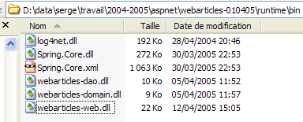 |
 |
تعليقات:
يحتوي المجلد [runtime] على ثلاثة ملفات ومجلدين فرعيين:
- وحدات التحكم [global.asax] و [main.aspx]
- ملف التكوين [web.config]
- المجلد [bin]، الذي يحتوي على:
- ملفات DLL للطبقات الثلاث [webarticles-dao.dll] و[webarticles-domain.dll] و[webarticles-web.dll]
- الملفات المطلوبة من قبل Spring [Spring-Core.*]، [log4net.dll]
- مجلد [views]، الذي يحتوي على كود العرض لمختلف طرق العرض.
- لا حاجة لوجود ملفات كود .vb لأن نسخها المُجمَّعة موجودة في ملفات DLL.
2.2.4.2. الاختبارات
نقوم بتكوين خادم الويب [Cassini] على النحو التالي:

باستخدام:
المسار الفعلي: D:\data\serge\work\2004-2005\aspnet\webarticles-010405\runtime\
المسار الافتراضي: /webarticles
باستخدام متصفح، نطلب عنوان URL [http://localhost/webarticles/main.aspx]

تذكر أن طبقة [dao] يتم تنفيذها بواسطة فئة تخزن المقالات في كائن [ArrayList]. تنشئ هذه الفئة قائمة أولية من أربع مقالات. من العرض أعلاه، نستخدم روابط القائمة لإجراء العمليات. فيما يلي بعض منها. يمثل العمود الأيسر طلب العميل، ويمثل العمود الأيمن الاستجابة المرسلة إلى العميل.
 |  |
 | 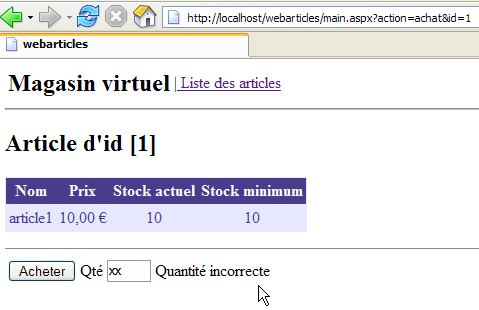 |
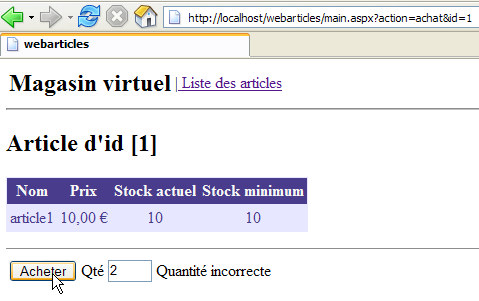 |  |
 |  |
 | 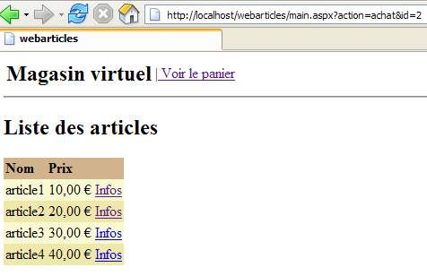 |
 | 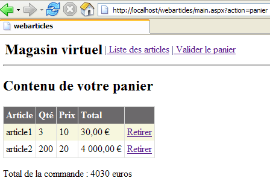 |
 |  |
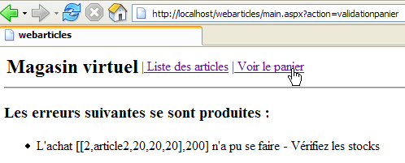 |  |
 |  |
 |  |
 | 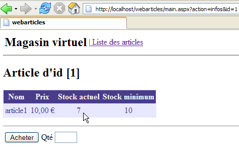 |
 | 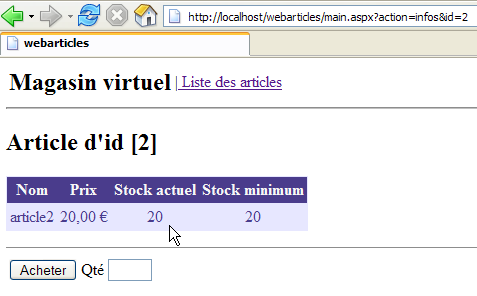 |
2.2.5. إعادة النظر في طبقة [DAO]
في أول تطبيق لنا لطبقة [dao]، تم تنفيذ واجهة الوصول إلى البيانات [IArticlesDao] بواسطة فئة تخزن العناصر في كائن [ArrayList]. سمح لنا ذلك بتجنب تعقيد هذه الطبقة بشكل مفرط وإثبات أن واجهتها هي المهمة فقط، وليس تنفيذها. وبذلك تمكنا من بناء تطبيق ويب فعال. يتكون هذا التطبيق من ثلاث طبقات: [web] و[domain] و[dao]. هنا، سنقترح تطبيقات مختلفة لطبقة [dao]. يمكن لكل منها أن تحل محل طبقة [dao] الحالية دون أي تعديل على طبقتي [domain] و[web]. تتحقق هذه المرونة للأسباب التالية:
- لا تتعامل طبقة [domain] مع فئة محددة بل مع واجهة [IArticlesDao]
- بفضل Spring، تمكنا من إخفاء اسم الفئة التي تنفذ واجهة [IArticlesDao] عن طبقة [domain].
2.2.5.1. عناصر طبقة [dao]
دعونا نستعرض بعض عناصر طبقة [dao] التي سيتم الاحتفاظ بها في عمليات التنفيذ الجديدة:
- - [IArticlesDao]: الواجهة للوصول إلى طبقة [dao]
- - [Article]: الفئة التي تحدد المقالة
2.2.5.2. فئة [Article]
الفئة التي تحدد المقالة هي كما يلي:
Imports System
Namespace istia.st.articles.dao
Public Class Article
' private fields
Private _id As Integer
Private _nom As String
Private _prix As Double
Private _stockactuel As Integer
Private _stockminimum As Integer
' id article
Public Property id() As Integer
Get
Return _id
End Get
Set(ByVal Value As Integer)
If Value <= 0 Then
Throw New Exception("Le champ id [" + Value.ToString + "] est invalide")
End If
Me._id = Value
End Set
End Property
' item name
Public Property nom() As String
Get
Return _nom
End Get
Set(ByVal Value As String)
If Value Is Nothing OrElse Value.Trim.Equals("") Then
Throw New Exception("Le champ nom [" + Value + "] est invalide")
End If
Me._nom = Value
End Set
End Property
' item price
Public Property prix() As Double
Get
Return _prix
End Get
Set(ByVal Value As Double)
If Value < 0 Then
Throw New Exception("Le champ prix [" + Value.ToString + "] est invalide")
End If
Me._prix = Value
End Set
End Property
' current stock item
Public Property stockactuel() As Integer
Get
Return _stockactuel
End Get
Set(ByVal Value As Integer)
If Value < 0 Then
Throw New Exception("Le champ stockActuel [" + Value.ToString + "] est invalide")
End If
Me._stockactuel = Value
End Set
End Property
' minimum stock item
Public Property stockminimum() As Integer
Get
Return _stockminimum
End Get
Set(ByVal Value As Integer)
If Value < 0 Then
Throw New Exception("Le champ stockMinimum [" + Value.ToString + "] est invalide")
End If
Me._stockminimum = Value
End Set
End Property
' default builder
Public Sub New()
End Sub
' builder with properties
Public Sub New(ByVal id As Integer, ByVal nom As String, ByVal prix As Double, ByVal stockactuel As Integer, ByVal stockminimum As Integer)
Me.id = id
Me.nom = nom
Me.prix = prix
Me.stockactuel = stockactuel
Me.stockminimum = stockminimum
End Sub
' article identification method
Public Overrides Function ToString() As String
Return "[" + id.ToString + "," + nom + "," + prix.ToString + "," + stockactuel.ToString + "," + stockminimum.ToString + "]"
End Function
End Class
End Namespace
توفر هذه الفئة:
- منشئًا لتعيين 5 معلومات عن عنصر ما: [id، name، price، currentStock، minimumStock]
- خصائص عامة لقراءة وكتابة المعلومات الخمس.
- التحقق من صحة البيانات التي تم إدخالها للعنصر. إذا كانت البيانات غير صالحة، يتم إصدار استثناء.
- طريقة toString التي تُرجع قيمة العنصر كسلسلة. وغالبًا ما يكون ذلك مفيدًا لتصحيح أخطاء التطبيق.
2.2.5.3. واجهة [IArticlesDao]
يتم تعريف واجهة [IArticlesDao] على النحو التالي:
Imports System
Imports System.Collections
Namespace istia.st.articles.dao
Public Interface IArticlesDao
' list of all items
Function getAllArticles() As IList
' add an article
Function ajouteArticle(ByVal unArticle As Article) As Integer
' deletes an article
Function supprimeArticle(ByVal idArticle As Integer) As Integer
' modify an article
Function modifieArticle(ByVal unArticle As Article) As Integer
' search for an article
Function getArticleById(ByVal idArticle As Integer) As Article
' deletes all articles
Sub clearAllArticles()
' changes the stock of an item
Function changerStockArticle(ByVal idArticle As Integer, ByVal mouvement As Integer) As Integer
End Interface
End Namespace
فيما يلي أدوار الطرق المختلفة في الواجهة:
تُرجع جميع المقالات من مصدر البيانات | |
مسح مصدر البيانات | |
إرجاع كائن [Article] المحدد برقمه | |
تسمح لك بإضافة مقال إلى مصدر البيانات | |
يسمح لك بتعديل مقال في مصدر البيانات | |
يسمح لك بحذف عنصر من مصدر البيانات | |
يسمح لك بتعديل مخزون عنصر في مصدر البيانات |
توفر الواجهة لبرامج العميل عددًا من الطرق التي يتم تعريفها فقط من خلال توقيعاتها. ولا تهتم بالكيفية التي سيتم بها تنفيذ هذه الطرق فعليًا. وهذا يضفي مرونة على التطبيق. يقوم برنامج العميل باستدعاءات على واجهة بدلاً من استدعاءات على تنفيذ محدد لها.
 |
يتم اختيار تطبيق معين عبر ملف تكوين Spring.
2.3. فئة التنفيذ [ArticlesDaoPlainODBC]
نقترح تطبيقًا جديدًا لطبقة [dao] يفترض أن البيانات موجودة في مصدر ODBC. نعلم أنه في نظام Windows، تحتوي جميع أنظمة إدارة قواعد البيانات (DBMS) المتوفرة في السوق تقريبًا على برنامج تشغيل ODBC. تتمثل ميزة هذا الحل في أنه يمكنك التبديل بين أنظمة إدارة قواعد البيانات (DBMS) بشكل شفاف بالنسبة للتطبيق. أما العيب فهو أن برنامج تشغيل ODBC الذي يستغل فقط الميزات المشتركة بين جميع أنظمة إدارة قواعد البيانات (DBMS) يكون عمومًا أقل كفاءة من برنامج تشغيل مكتوب خصيصًا لاستغلال الإمكانات الكاملة لنظام إدارة قواعد بيانات (DBMS) معين. انظر القسم 3.7 للاطلاع على مثال لإنشاء مصدر ODBC.
2.3.1. الكود
2.3.1.1. الهيكل
تنفذ فئة [ArticlesDaoPlainODBC] واجهة [IArticlesDao] على النحو التالي:
تعليقات:
- السطر 3: يستورد مساحة الاسم التي تحتوي على فئات .NET للوصول إلى مصادر ODBC
- السطر 11 - سيخزن الاتصال بمصدر ODBC
- السطر 12 - يخزن اسم DSN لمصدر البيانات
- الأسطر 13-19: متغيرات خاصة من النوع [OdbcCommand] تحدد استعلامات SQL المستخدمة من قبل الطرق المختلفة للفئة
- الأسطر 22–27: المنشئ. يتلقى العناصر اللازمة لإنشاء كائن [OdbcConnection] الذي سيربط الكود بمصدر بيانات ODBC
- الأسطر 29–31 – الطريقة لإضافة عنصر
- الأسطر 33–35 – الطريقة لتغيير مخزون عنصر
- الأسطر 37–39 – الطريقة التي تحذف جميع العناصر من مصدر بيانات ODBC
- الأسطر 41-43 - الطريقة التي تسترد قائمة جميع العناصر من مصدر ODBC
- الأسطر 45–47 – الطريقة التي تسترد عنصرًا معينًا
- الأسطر 49-51 – الطريقة التي تسمح لك بتعديل حقول معينة لعنصر لديك رقمه
- الأسطر 53-55 – الطريقة التي تسمح لك بحذف عنصر برقمه
- الأسطر 57-60 - طريقة مساعدة لتنفيذ [SELECT] على مصدر البيانات وإرجاع النتيجة
- الأسطر 62-64 – طريقة مساعدة لتنفيذ [INSERT، UPDATE، DELETE] على مصدر البيانات وإرجاع النتيجة
2.3.1.2. الشركة
تعليقات:
- السطر 2 - يتلقى المنشئ المعلومات الثلاث التي يحتاجها للاتصال بمصدر ODBC: اسم DSN للمصدر، واسم المستخدم للاتصال، وكلمة المرور المرتبطة به.
- السطر 8 - يتم تخزين اسم DSN للمصدر بحيث يمكن تضمينه في رسائل الخطأ.
- السطر 9 - يتم إنشاء مثيل للكائن [OdbcConnection]. الاتصال الذي تم إنشاء مثيل له ليس اتصالاً مفتوحاً. تُستخدم الطريقة [open] لفتح الاتصال.
- الأسطر 12-19 – نقوم بإعداد استعلامات SQL في كائنات [OdbcCommand]. سيوفر لنا ذلك عناء إعادة إنشائها في كل مرة نحتاج إليها. سيتم استبدال المعلمات الرسمية ? في الاستعلامات بقيم فعلية عند تنفيذ الاستعلام.
2.3.1.3. طريقة executeQuery
تعليقات:
- طريقة [executeQuery] هي طريقة مساعدة تقوم بما يلي:
- تنفيذ استعلام [SELECT id, name, price, currentStock, minimumStock from ARTICLES ...] على مصدر البيانات
- تُرجع النتيجة كقائمة من كائنات [Article]
- السطر 1 - المعلمة الوحيدة للطريقة هي كائن [OdbcCommand] الذي يحتوي على استعلام [Select] المراد تنفيذه.
- السطر 7 - يتم فتح الاتصال. وسيتم إغلاقه في السطر 29 بغض النظر عما إذا حدث خطأ أم لا.
- السطر 9 - يتم إنشاء مثيل لكائن [OdbcDataReader] اللازم لمعالجة نتيجة [Select]
- الأسطر 13–23 – يتم وضع كل صف ناتج عن استعلام [Select] في كائن [Article]، والذي يتم إضافته بعد ذلك إلى المقالات الأخرى في [ArrayList]
- يتم إرجاع قائمة العناصر في السطر 25
- لا يتم التعامل مع أي استثناءات. يجب التعامل معها بواسطة الكود الذي يستدعي هذه الطريقة.
2.3.1.4. طريقة executeUpdate
تعليقات:
- تستقبل الطريقة كائن [OdbcCommand] يحتوي على استعلام SQL من النوع [Insert، Update، Delete].
- يتم فتح الاتصال في السطر 5. وسيتم إغلاقه في السطر 10 بغض النظر عما إذا حدث استثناء أم لا.
- يتم تنفيذ استعلام التحديث في السطر 7. يتم إرجاع النتيجة — عدد الصفوف في جدول ARTICLES التي تم تعديلها بواسطة الاستعلام — على الفور.
2.3.1.5. طريقة addArticle
تعليقات:
- السطر 1 - تستقبل الطريقة العنصر المراد إضافته إلى مصدر بيانات ODBC. وتُرجع عدد الصفوف المتأثرة بهذه العملية، أي 1 أو 0
- السطران 3 و20 - يتم مزامنة الطريقة. وسيكون هذا هو الحال بالنسبة لجميع طرق الوصول إلى البيانات. وهذا يعني أنه لا يمكن إلا لخيط واحد في كل مرة العمل على مصدر البيانات. وربما يكون هذا أسلوبًا متحفظًا للغاية. فهناك بدائل أفضل، لا سيما تضمين هذه العمليات ضمن المعاملات. وفي هذه الحالة، يتولى نظام إدارة قواعد البيانات (DBMS) إدارة الوصول المتزامن. لم نرغب في إدخال مفهوم المعاملات في هذه المرحلة. يوفر لنا Spring خيار إدخالها في طبقة [domain]. قد تتاح لنا الفرصة لإعادة النظر في هذا الأمر في مقال آخر.
- تقوم الأسطر 5-12 بتعيين قيم للمعلمات الرسمية للاستعلام الخاص بكائن [insertCommand] الذي تم تهيئته بواسطة المنشئ. وإليك الاستعلام مرة أخرى:
insertCommand = New OdbcCommand("insert into ARTICLES(id, nom, prix, stockactuel, stockminimum) values (?,?,?,?,?)", connexion)
يتم توفير القيم الخمس المطلوبة للاستعلام من خلال الأسطر 7-11.
- الأسطر 13–19: يتم تنفيذ الاستعلام. إذا نجح، يتم إرجاع النتيجة. وإلا، يتم إلقاء استثناء عام مع رسالة خطأ صريحة
2.3.1.6. طريقة modifieArticle
تعليقات:
- السطر 1 - تستقبل الطريقة العنصر المراد تعديله من مصدر بيانات ODBC. وتُرجع عدد الصفوف المتأثرة بهذه العملية، أي 1 أو 0
- يمكن إدراج التعليقات من طريقة [addItem] هنا
2.3.1.7. طريقة deleteArticle
تعليقات:
- السطر 1 - تستقبل الطريقة معرف العنصر المراد حذفه من مصدر بيانات ODBC. وتُرجع عدد الصفوف المتأثرة بهذه العملية، أي 1 أو 0
- يمكن إدراج التعليقات الخاصة بالوظيفة [addItem] هنا
2.3.1.8. طريقة getAllArticles
تعليقات:
- السطر 1 - لا تأخذ الطريقة أي معلمات. وهي تُرجع قائمة بجميع العناصر من مصدر بيانات ODBC
- يتم تمرير استعلام [Select] الذي يسترد جميع السجلات إلى دالة [executeQuery] - السطر 6
- يتم إرجاع القائمة الناتجة في السطر 8
- تتعامل الأسطر 9-12 مع أي استثناءات
2.3.1.9. طريقة getArticleById
تعليقات:
- السطر 1 - تستقبل الطريقة معرف العنصر المطلوب كمعلمة. وتُرجع العنصر إذا تم العثور عليه في مصدر ODBC؛ وإلا، فإنها تُرجع المرجع [nothing].
- يتم تهيئة استعلام [Select] الذي يطلب العنصر في الأسطر 5-8
- ويتم تنفيذه في السطر 12 - يتم الحصول على قائمة بالعناصر
- إذا كانت هذه القائمة فارغة، يتم إرجاع المرجع [nothing] في السطر 14
- وإلا، يتم عرض العنصر الوحيد في القائمة في السطر 16
- تتعامل الأسطر 17-20 مع أي استثناءات
2.3.1.10. طريقة clearAllArticles
تعليقات:
- السطر 1 - لا تأخذ الطريقة أي معلمات ولا تُرجع أي قيمة
- السطر 6 - يتم تنفيذ الاستعلام لحذف جميع العناصر
- الأسطر 7-10: معالجة أي استثناءات
2.3.1.11. طريقة changerStockArticle
تعليقات:
- السطر 1 - تتلقى الطريقة كمعلمات رقم العنصر الذي يجب تعديل المخزون الخاص به، بالإضافة إلى زيادة المخزون (موجبة أو سالبة). وتُرجع عدد الصفوف التي تم تعديلها بواسطة العملية، أي 0 أو 1.
- الأسطر 5–10: يتم تهيئة استعلام [updateStockCommand]. فيما يلي نص استعلام SQL:
updateStockCommand = New OdbcCommand("update ARTICLES set stockactuel=stockactuel+? where id=? and (stockactuel+?)>=0", connexion)
لاحظ أن المخزون لا يتم تعديله إلا إذا ظل >=0 بعد التغيير.
- يتم تنفيذ الاستعلام لتحديث مخزون العنصر في السطر 13، ويتم إرجاع النتيجة
- في الأسطر 14–18، حيث نتعامل مع أي استثناءات
2.3.2. إنشاء تجميع طبقة [DAO]
يحتوي مشروع Visual Studio الخاص بهذه النسخة الجديدة من طبقة [dao] على الهيكل التالي:

تم تكوين المشروع لإنشاء ملف DLL باسم [webarticles-dao.dll]:
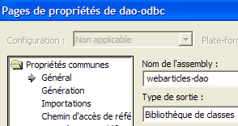 |  |
2.3.3. اختبارات NUnit لطبقة [dao]
2.3.3.1. إنشاء مصدر بيانات ODBC-Firebird في
لاختبار طبقة [DAO] الجديدة، نحتاج إلى مصدر بيانات ODBC وبالتالي إلى قاعدة بيانات. نستخدم نظام إدارة قواعد البيانات Firebird (القسم 3.5). باستخدام IBExpert (القسم 3.6)، نقوم بإنشاء قاعدة بيانات المقالات التالية:
 |  |
سيكون مسؤول قاعدة البيانات هذه هو المستخدم [SYSDBA] بكلمة مرور [masterkey]. نقوم بإنشاء بعض السجلات:

نقوم الآن بإنشاء مصدر Firebird ODBC التالي (انظر القسم 3.7):
 |
يتميز مصدر ODBC الذي تم إنشاؤه بالخصائص التالية:
- اسم DSN: odbc-firebird-articles
- معرف الاتصال: SYSDBA
- كلمة المرور المرتبطة: masterkey
2.3.3.2. فئة اختبار NUnit لطبقة [dao]
لقد كتبنا بالفعل فئة اختبار لطبقة [dao] التي تم إنشاؤها مسبقًا. إذا كان القارئ يتذكر، فإن هذه الفئة لم تختبر فئة معينة بل واجهة [IArticlesDao]:
Imports System
Imports System.Collections
Imports NUnit.Framework
Imports istia.st.articles.dao
Imports System.Threading
Imports Spring.Objects.Factory.Xml
Imports System.IO
Namespace istia.st.articles.tests
<TestFixture()> _
Public Class NunitTestArticlesArrayList
' the test object
Private articlesDao As IArticlesDao
<SetUp()> _
Public Sub init()
' retrieve an instance of the Spring object manufacturer
Dim factory As XmlObjectFactory = New XmlObjectFactory(New FileStream("spring-config.xml", FileMode.Open))
' request instantiation of articlesdao object
articlesDao = CType(factory.GetObject("articlesdao"), IArticlesDao)
End Sub
....
يمكننا أن نرى أنه في الأسلوب <Setup()>، نطلب من Spring مرجعًا إلى الكائن الفردي المسمى [articlesdao] من النوع [IArticlesDao]، أي من نوع الواجهة. تم تعريف الكائن الفردي [articlesdao] بواسطة ملف التكوين [spring-config.xml] التالي:
<?xml version="1.0" encoding="iso-8859-1" ?>
<!DOCTYPE objects PUBLIC "-//SPRING//DTD OBJECT//EN"
"http://www.springframework.net/dtd/spring-objects.dtd">
<objects>
<object id="articlesdao" type="istia.st.articles.dao.ArticlesDaoArrayList, webarticles-dao"/>
</objects>
دعونا نوضح أن فئة الاختبار الأولية تسمح لنا باختبار طبقة [dao] الجديدة دون تعديل أو إعادة تجميع.
- في مجلد Visual Studio الخاص بطبقة [dao] الجديدة، قم بإنشاء مجلد [tests] (الموضح على اليمين أدناه) عن طريق نسخ مجلد [bin] من مشروع الاختبار الخاص بطبقة [dao] الأولية (الموضح على اليسار أدناه). إذا لزم الأمر، ندعو القارئ إلى مراجعة مشروع الاختبار الخاص بالإصدار الأول من طبقة [dao] في الجزء الأول من المقالة.
 | 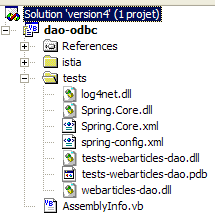 |
- في المجلد [tests]، استبدل ملف DLL [webarticles-dao.dll] الموجود في طبقة [dao] القديمة بملف DLL [webarticles-dao.dll] الموجود في طبقة [dao] الجديدة
- قم بتعديل ملف التكوين [spring-config.xml] لإنشاء مثيل للفئة الجديدة [ArticlesDaoPlainODBC]:
تعليقات:
- السطر 6، أصبح الكائن [articlesdao] مرتبطًا الآن بمثيل لفئة [ArticlesDaoPlainODBC]
- تحتوي هذه الفئة على منشئ بثلاثة معلمات:
- اسم مصدر DSN - السطر 8
- الهوية المستخدمة للوصول إلى قاعدة البيانات - السطر 11
- كلمة المرور المرتبطة بهذه الهوية - السطر 14
هنا، نستخدم المعلومات من مصدر ODBC-Firebird الذي أنشأناه سابقًا.
2.3.3.3. الاختبار
نحن الآن جاهزون لتشغيل الاختبارات. باستخدام تطبيق [Nunit-Gui]، نقوم بتحميل ملف DLL [test-webarticles-dao.dll] من المجلد [tests] أعلاه ونشغل اختبار [testGetAllArticles]:

بالنظر إلى لقطة الشاشة أعلاه، قد نأسف على الاسم [NUnitTestArticlesDaoArrayList] الذي أُطلق في البداية على فئة الاختبار. إنه مربك. ففي الواقع، فئة [ArticlesDaoPlainODBC] هي التي يتم اختبارها هنا. تظهر لقطة الشاشة أننا استرجعنا بشكل صحيح المقالات التي وضعناها في جدول [ARTICLES]. الآن، دعونا نجري جميع الاختبارات:

في النافذة اليسرى، نرى قائمة بالطرق التي تم اختبارها. يشير لون النقطة التي تسبق اسم كل طريقة إلى ما إذا كانت الطريقة قد نجحت (أخضر) أو فشلت (أحمر). سيلاحظ القراء الذين يشاهدون هذا المستند على الشاشة أن جميع الاختبارات كانت ناجحة.
2.3.3.4. الخلاصة
لقد أثبتنا للتو ما يلي:
- لأن فئة اختبار NUnit لم تشير إلى فئة بل إلى واجهة؛
- لأن الاسم الدقيق للفئة التي تقوم بإنشاء مثيل للواجهة تم توفيره في ملف التكوين وليس في الكود؛
- لأن Spring تولى إنشاء مثيل للفئة وتوفير مرجع لها في كود الاختبار؛
وبالتالي، ظل كود الاختبار المكتوب لطبقة [dao] الأولية صالحًا لتنفيذ جديد لنفس الطبقة. لم نكن بحاجة إلى الوصول إلى كود فئة الاختبار. استخدمنا فقط نسخته المُجمَّعة، تلك التي تم إنشاؤها أثناء اختبار طبقة [dao] الأولية. سنستخلص استنتاجات مماثلة عندما يحين وقت دمج طبقة [dao] الجديدة في تطبيق [webarticles].
2.3.4. دمج الطبقة [dao] الجديدة في تطبيق [webarticles]
2.3.4.1. اختبارات الدمج
تذكر أن الإصدار الأولي لتطبيق [webarticles] تم نشره في مجلد [runtime] التالي:
| |
|
يُنصح القراء بمراجعة القسم 2.2.4، الذي يوضح بالتفصيل إجراءات نشر تطبيق [webarticles]. نقوم بإجراء التغييرات التالية على محتويات مجلد [runtime]:
- في مجلد [bin]، يتم استبدال ملف DLL الخاص بطبقة [dao] القديمة بملف DLL الخاص بطبقة [dao] الجديدة
- في [runtime]، يتم استبدال ملف التكوين [web.config] بملف يأخذ في الاعتبار فئة التنفيذ الجديدة لطبقة [dao]:
 |
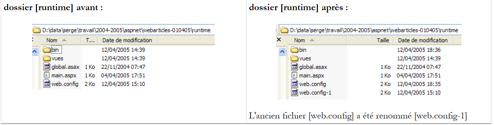 |
فيما يلي ملف التكوين [web.config] الجديد:
تعليقات:
- تربط الأسطر 14–24 الكائن الفردي [articlesDao] بمثيل لفئة [ArticlesDaoPlainODBC] الجديدة. هذا هو التغيير الوحيد. وقد واجهنا هذا بالفعل أثناء اختبار طبقة [dao] الجديدة.
نحن جاهزون لإجراء الاختبار. نقوم بتكوين خادم الويب [Cassini] بنفس الطريقة الموضحة في القسم 2.2.4. ونقوم بتهيئة جدول المنتج [Firebird] بالقيم التالية:

تأكد من تشغيل خادم الويب Cassini ونظام إدارة قواعد البيانات [Firebird]. باستخدام متصفح، نطلب عنوان URL [http://localhost/webarticles/main.aspx]:

 |
الآن دعونا نتحقق من محتويات جدول [ARTICLES] في قاعدة بيانات [Firebird]:
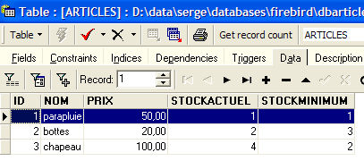
تم شراء العنصرين [umbrella] و [boots]، وانخفضت مستويات مخزونهما بمقدار الكمية المشتراة. لم يتم شراء العنصر [hat] لأن الكمية المطلوبة تجاوزت الكمية المتوفرة في المخزون. ندعو القارئ إلى إجراء اختبارات إضافية.
2.3.4.2. الخلاصة
ماذا فعلنا؟
- عدنا إلى إصدار النشر من الإصدار السابق؛
- استبدلنا DLL طبقة [dao] بإصدار جديد. ظلت DLLs طبقتي [web] و[domain] دون تغيير؛
- وقمنا بتعديل ملف التكوين [web.config] بحيث يأخذ في الاعتبار فئة التنفيذ الجديدة لطبقة [dao]
كل هذا واضح ويجعل من السهل جدًا تطوير تطبيق الويب. يتم توفير هذه الميزات المهمة من خلال خيارين معماريين:
- الوصول إلى الطبقات عبر الواجهات
- تكامل الطبقات وتكوينها بواسطة Spring.
نقترح الآن تنفيذًا جديدًا لطبقة [dao].
2.4. فئة التنفيذ [ArticlesDaoSqlServer]
يفترض التنفيذ الثاني لطبقة [dao] أن البيانات موجودة في قاعدة بيانات SQL Server. توفر Microsoft نظام إدارة قواعد البيانات (DBMS) يسمى MSDE، وهو نسخة محدودة من SQL Server. انظر الملحق للحصول على إرشادات حول كيفية الحصول عليه وتثبيته، القسم 3.12.
2.4.1. الكود
تشبه فئة [ArticlesDaoSqlServer] إلى حد كبير فئة [ArticlesDaoPlainODBC] التي تمت مناقشتها سابقًا. لذلك، سنكتفي بتسليط الضوء على التغييرات التي تم إجراؤها على الإصدار السابق:
- توجد الفئات المطلوبة في مساحة الاسم [System.Data.SqlClient] بدلاً من مساحة الاسم [System.Data.Odbc]
- أصبح اتصال [OdbcConnection] الآن من النوع [SqlConnection]
- أصبحت كائنات [OdbcCommand] الآن من النوع [SqlCommand]
- تغيرت صيغة استعلامات SQL المعلمة. أصبح استعلام الإدراج الآن كما يلي:
insertCommand = New SqlCommand("insert into ARTICLES(id, nom, prix, stockactuel, stockminimum) values (@id,@nom,@prix,@sa,@sm)", connexion)
بينما كان في السابق:
insertCommand = New OdbcCommand("insert into ARTICLES(id, nom, prix, stockactuel, stockminimum) values (?,?,?,?,?)", connexion)
- ثم تصبح طريقة [addItem] كما يلي:
Public Function ajouteArticle(ByVal unArticle As Article) As Integer Implements IArticlesDao.ajouteArticle
' exclusive section
SyncLock Me
' prepare the insertion request
With insertCommand.Parameters
.Clear()
.Add(New SqlParameter("@id", unArticle.id))
.Add(New SqlParameter("@nom", unArticle.nom))
.Add(New SqlParameter("@prix", unArticle.prix))
.Add(New SqlParameter("@sa", unArticle.stockactuel))
.Add(New SqlParameter("@sm", unArticle.stockminimum))
End With
Try
'it is executed
Return executeUpdate(insertCommand)
Catch ex As Exception
'query error
Throw New Exception(String.Format("Erreur à l'ajout de l'article [{0}] : {1}", unArticle.ToString, ex.Message))
End Try
End SyncLock
End Function
- تم تعديل المنشئ أيضًا:
Public Sub New(ByVal serveur As String, ByVal databaseName As String, ByVal uid As String, ByVal password As String)
' server: instance name SQL server to reach
' databaseName: name of the database to be reached
' uid: user identity
' password: your password
'retrieve the name of the database passed as an argument
Me.databaseName = databaseName
'we instantiate the connection
Dim connectString As String = String.Format("Data Source={0};Initial Catalog={1};UID={2};PASSWORD={3}", serveur, databaseName, uid, password)
connexion = New SqlConnection(connectString)
' prepare SQL requests
insertCommand = New SqlCommand("insert into ARTICLES(id, nom, prix, stockactuel, stockminimum) values (@id,@nom,@prix,@sa,@sm)", connexion)
...
End Sub
يقبل المنشئ الآن أربعة معلمات:
' server: instance name SQL server to reach
' databaseName: name of the database to be reached
' uid: user identity
' password: your password
فيما يلي الكود الكامل لفئة [ArticlesDaoSqlServer]:
Imports System
Imports System.Collections
Imports System.Data.SqlClient
Namespace istia.st.articles.dao
Public Class ArticlesDaoSqlServer
Implements istia.st.articles.dao.IArticlesDao
' private fields
Private connexion As SqlConnection = Nothing
Private databaseName As String
Private insertCommand As SqlCommand
Private updatecommand As SqlCommand
Private deleteSomeCommand As SqlCommand
Private selectSomeCommand As SqlCommand
Private updateStockCommand As SqlCommand
Private deleteAllCommand As SqlCommand
Private selectAllCommand As SqlCommand
' manufacturer
Public Sub New(ByVal serveur As String, ByVal databaseName As String, ByVal uid As String, ByVal password As String)
' server: instance name SQL server to reach
' databaseName: name of the database to be reached
' uid: user identity
' password: your password
'retrieve the name of the database passed as an argument
Me.databaseName = databaseName
'we instantiate the connection
Dim connectString As String = String.Format("Data Source={0};Initial Catalog={1};UID={2};PASSWORD={3}", serveur, databaseName, uid, password)
connexion = New SqlConnection(connectString)
' prepare SQL requests
insertCommand = New SqlCommand("insert into ARTICLES(id, nom, prix, stockactuel, stockminimum) values (@id,@nom,@prix,@sa,@sm)", connexion)
updatecommand = New SqlCommand("update ARTICLES set nom=@nom, prix=@prix, stockactuel=@sa, stockminimum=@sm where id=@id", connexion)
deleteSomeCommand = New SqlCommand("delete from ARTICLES where id=@id", connexion)
selectSomeCommand = New SqlCommand("select id, nom, prix, stockactuel, stockminimum from ARTICLES where id=@id", connexion)
updateStockCommand = New SqlCommand("update ARTICLES set stockactuel=stockactuel+@mvt where id=@id and (stockactuel+@mvt)>=0", connexion)
selectAllCommand = New SqlCommand("select id, nom, prix, stockactuel, stockminimum from ARTICLES", connexion)
deleteAllCommand = New SqlCommand("delete from ARTICLES", connexion)
End Sub
Public Function ajouteArticle(ByVal unArticle As Article) As Integer Implements IArticlesDao.ajouteArticle
' exclusive section
SyncLock Me
' prepare the insertion request
With insertCommand.Parameters
.Clear()
.Add(New SqlParameter("@id", unArticle.id))
.Add(New SqlParameter("@nom", unArticle.nom))
.Add(New SqlParameter("@prix", unArticle.prix))
.Add(New SqlParameter("@sa", unArticle.stockactuel))
.Add(New SqlParameter("@sm", unArticle.stockminimum))
End With
Try
'it is executed
Return executeUpdate(insertCommand)
Catch ex As Exception
'query error
Throw New Exception(String.Format("Erreur à l'ajout de l'article [{0}] : {1}", unArticle.ToString, ex.Message))
End Try
End SyncLock
End Function
Public Function changerStockArticle(ByVal idArticle As Integer, ByVal mouvement As Integer) As Integer Implements IArticlesDao.changerStockArticle
' exclusive section
SyncLock Me
' prepare the stock update request
With updateStockCommand.Parameters
.Clear()
.Add(New SqlParameter("@mvt", mouvement))
.Add(New SqlParameter("@id", idArticle))
End With
'it is executed
Try
Return executeUpdate(updateStockCommand)
Catch ex As Exception
'query error
Throw New Exception(String.Format("Erreur lors du changement de stock [idArticle={0}, mouvement={1}] : [{2}]", idArticle, mouvement, ex.Message))
End Try
End SyncLock
End Function
Public Sub clearAllArticles() Implements IArticlesDao.clearAllArticles
' exclusive section
SyncLock Me
Try
'execute the insertion request
executeUpdate(deleteAllCommand)
Catch ex As Exception
'query error
Throw New Exception(String.Format("Erreur lors de la suppression des articles : {0}", ex.Message))
End Try
End SyncLock
End Sub
Public Function getAllArticles() As System.Collections.IList Implements IArticlesDao.getAllArticles
' exclusive section
SyncLock Me
Try
'execute the select query
Dim articles As IList = executeQuery(selectAllCommand)
'we return the list
Return articles
Catch ex As Exception
'query error
Throw New Exception(String.Format("Erreur lors de l'obtention des articles [select id,nom,prix,stockactuel,stockminimum from articles]: {0}", ex.Message))
End Try
End SyncLock
End Function
Public Function getArticleById(ByVal idArticle As Integer) As Article Implements IArticlesDao.getArticleById
' exclusive section
SyncLock Me
' prepare the select query
With selectSomeCommand.Parameters
.Clear()
.Add(New SqlParameter("@id", idArticle))
End With
'it is executed
Try
'execute the query
Dim articles As IList = executeQuery(selectSomeCommand)
'we test if we've found the article
If articles.Count = 0 Then Return Nothing
'we return the item
Return CType(articles.Item(0), Article)
Catch ex As Exception
'query error
Throw New Exception(String.Format("Erreur lors de la recherche de l'article [{0} : {1}", idArticle, ex.Message))
End Try
End SyncLock
End Function
Public Function modifieArticle(ByVal unArticle As Article) As Integer Implements IArticlesDao.modifieArticle
' exclusive section
SyncLock Me
' prepare the update request
With updatecommand.Parameters
.Clear()
.Add(New SqlParameter("@nom", unArticle.nom))
.Add(New SqlParameter("@prix", unArticle.prix))
.Add(New SqlParameter("@sa", unArticle.stockactuel))
.Add(New SqlParameter("@sm", unArticle.stockminimum))
.Add(New SqlParameter("@id", unArticle.id))
End With
' it is executed
Try
'execute the insertion request
Return executeUpdate(updatecommand)
Catch ex As Exception
'query error
Throw New Exception("Erreur lors de la modification de l'article [" + unArticle.ToString + "]", ex)
End Try
End SyncLock
End Function
Public Function supprimeArticle(ByVal idArticle As Integer) As Integer Implements IArticlesDao.supprimeArticle
' exclusive section
SyncLock Me
' prepare the delete request
With deleteSomeCommand.Parameters
.Clear()
.Add(New SqlParameter("@id", idArticle))
End With
'it is executed
Try
'execute the delete request
Return executeUpdate(deleteSomeCommand)
Catch ex As Exception
'query error
Throw New Exception(String.Format("Erreur lors de la suppression de l'article [id={0}] : {1}", idArticle, ex.Message))
End Try
End SyncLock
End Function
Private Function executeQuery(ByVal query As SqlCommand) As IList
' query execution SELECT
' declaration of the object providing access to all rows in the result table
Dim myReader As SqlDataReader = Nothing
Try
'create a connection to BDD
connexion.Open()
'execute the query
myReader = query.ExecuteReader()
'declare a list of items and return it later
Dim articles As IList = New ArrayList
Dim unArticle As Article
While myReader.Read()
'we prepare an article with the reader's values
unArticle = New Article
unArticle.id = myReader.GetInt32(0)
unArticle.nom = myReader.GetString(1)
unArticle.prix = myReader.GetDouble(2)
unArticle.stockactuel = myReader.GetInt32(3)
unArticle.stockminimum = myReader.GetInt32(4)
'add the item to the list
articles.Add(unArticle)
End While
'returns the result
Return articles
Finally
' freeing up resources
If Not myReader Is Nothing And Not myReader.IsClosed Then myReader.Close()
If Not connexion Is Nothing Then connexion.Close()
End Try
End Function
Private Function executeUpdate(ByVal updateCommand As SqlCommand) As Integer
' execute an update request
Try
'create a connection to BDD
connexion.Open()
'execute the query
Return updateCommand.ExecuteNonQuery()
Finally
' freeing up resources
If Not connexion Is Nothing Then connexion.Close()
End Try
End Function
End Class
End Namespace
يُنصح القارئ بمراجعة هذا الكود في ضوء التعليقات على فئة [ArticlesDaoPlainODBC] التي تم تقديمها سابقًا.
2.4.2. إنشاء تجميع طبقة [dao]
يحتوي مشروع Visual Studio الجديد على الهيكل التالي:

تم تكوين المشروع لإنشاء مكتبة DLL باسم [webarticles-dao.dll]:
 | 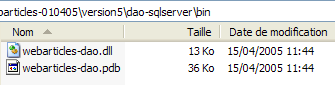 |
2.4.3. اختبارات NUnit لطبقة [dao]
2.4.3.1. إنشاء مصدر بيانات SQL Server
لاختبار طبقة [dao] الجديدة، نحتاج إلى مصدر بيانات SQL Server وبالتالي إلى نظام إدارة قواعد البيانات (DBMS) SQL Server. سنستخدم في الواقع نظام إدارة قواعد البيانات MSDE (Microsoft Data Engine) (القسم 3.12)، وهو إصدار من SQL Server محدود فقط بعدد المستخدمين المتزامنين الذي يدعمه. باستخدام [EMS MS SQL Manager] (القسم 3.14)، نقوم بإنشاء قاعدة بيانات المنتج التالية في مثيل MSDE باسم [portable1_tahe\msde140405]:
 |  |

قاعدة البيانات مملوكة للمستخدم [mdparticles] بكلمة مرور [admarticles]. الأمر Transact-SQL لإنشاء الجدول [ARTICLES] هو كما يلي:
CREATE TABLE [ARTICLES] (
[id] int NOT NULL,
[nom] varchar(20) COLLATE French_CI_AS NOT NULL,
[prix] float(53) NOT NULL,
[stockactuel] int NOT NULL,
[stockminimum] int NOT NULL,
CONSTRAINT [ARTICLES_uq] UNIQUE ([nom]),
PRIMARY KEY ([id]),
CONSTRAINT [ARTICLES_ck_id] CHECK ([id] > 0),
CONSTRAINT [ARTICLES_ck_nom] CHECK ([nom] <> ''),
CONSTRAINT [ARTICLES_ck_prix] CHECK ([prix] >= 0),
CONSTRAINT [ARTICLES_ck_stockactuel] CHECK ([stockactuel] >= 0),
CONSTRAINT [ARTICLES_ck_stockminimum] CHECK ([stockminimum] >= 0)
)
ON [PRIMARY]
GO
نقوم بإنشاء بعض العناصر:

2.4.3.2. فئة اختبار NUnit
فئة اختبار NUnit لفئة التنفيذ [ArticlesDaoSqlServer] هي نفسها الخاصة بفئة [ArticlesDaoPlainODBC] (انظر القسم 2.3.3.2). نتبع نهجًا مشابهًا لإعداد اختبار NUnit للفئة:
- نقوم بإنشاء المجلد [tests] (على اليمين) في مجلد Visual Studio الخاص بمشروع [dao-sqlserver] عن طريق نسخ المجلد [tests] من مشروع [dao-odbc] (على اليسار):
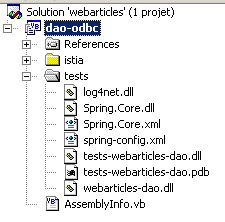 | 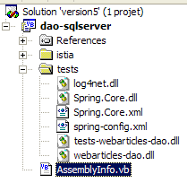 |
- في مجلد [tests] الخاص بمشروع [dao-sqlserver]، نستبدل ملف DLL [webarticles-dao.dll] بملف DLL [webarticles-dao.dll] الذي تم إنشاؤه بواسطة مشروع [dao-sqlserver]
- نقوم بتعديل ملف التكوين [spring-config.xml] لإنشاء مثيل للفئة الجديدة [ArticlesDaoSqlServer]:
تعليقات:
- السطر 7، أصبح الكائن [articlesdao] مرتبطًا الآن بمثيل لفئة [ArticlesDaoSqlServer]
- تحتوي هذه الفئة على منشئ بأربعة معلمات:
- اسم مثيل MSDE المستخدم - السطر 9
- اسم قاعدة البيانات - السطر 12
- الهوية المستخدمة للوصول إلى قاعدة البيانات - السطر 15
- كلمة المرور المرتبطة بهذه الهوية - السطر 18
نستخدم هنا المعلومات من مصدر MSDE الذي أنشأناه سابقًا.
2.4.3.3. الاختبار
نحن جاهزون لإجراء الاختبارات. باستخدام تطبيق [Nunit-Gui]، نقوم بتحميل ملف DLL [test-webarticles-dao.dll] من المجلد [tests] أعلاه ونقوم بتشغيل اختبار [testGetAllArticles]:

على الرغم من أن فئة الاختبار كانت تسمى في البداية [NUnitTestArticlesDaoArrayList] — وهو اسم تم الاحتفاظ به لأننا نستخدم ملف DLL [tests-webarticles-dao.dll] المشتق من هذه الفئة — إلا أن الفئة [ArticlesDaoSqlserver] هي التي يتم اختبارها هنا بالفعل. تُظهر لقطة الشاشة أننا استرجعنا بشكل صحيح المقالات التي وضعناها في الجدول [ARTICLES]. الآن، دعونا نجري جميع الاختبارات:

في النافذة اليسرى، نرى قائمة بالطرق التي تم اختبارها. يشير لون النقطة التي تسبق اسم كل طريقة إلى ما إذا كانت الطريقة قد نجحت (أخضر) أو فشلت (أحمر). سيلاحظ القراء الذين يشاهدون هذا المستند على الشاشة أن جميع الاختبارات كانت ناجحة.
2.4.4. دمج الطبقة [dao] الجديدة في تطبيق [webarticles]
نتبع الإجراء الموضح في القسم 2.3.4. نقوم بإجراء التغييرات التالية على محتويات مجلد [runtime]:
- في مجلد [bin]، يتم استبدال ملف DLL الخاص بطبقة [dao] القديمة بملف DLL الخاص بطبقة [dao] الجديدة التي تم تنفيذها بواسطة فئة [ArticlesDaoSqlServer]
- في [runtime]، يتم استبدال ملف التكوين [web.config] بملف يأخذ في الاعتبار فئة التنفيذ الجديدة:
تعليقات:
- تربط الأسطر 15–33 الكائن الفردي [articlesDao] بمثيل للفئة الجديدة [ArticlesDaoSqlServer]. هذا هو التغيير الوحيد. وقد واجهنا هذا بالفعل أثناء اختبار الطبقة الجديدة [dao]
نحن جاهزون للاختبار. نحتفظ بنفس تكوين خادم الويب [Cassini] كما كان من قبل. نقوم بتهيئة جدول المنتج [MSDE] بالقيم التالية:

تأكد من تشغيل خادم الويب Cassini ونظام إدارة قواعد البيانات MSDE (هنا، المثيل portable1_tahe\msde140405). باستخدام متصفح، نطلب عنوان URL [http://localhost/webarticles/main.aspx]:
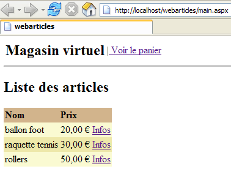
 |
الآن دعونا نتحقق من محتويات الجدول [ARTICLES] في قاعدة البيانات [MSDE]:

تم شراء العنصرين [كرة قدم] و[مضرب تنس]، وانخفضت مستويات مخزونهما بمقدار الكمية المشتراة. لم يتم شراء العنصر [زلاجات دوارة] لأن الكمية المطلوبة تجاوزت الكمية المتوفرة في المخزون. ندعو القارئ إلى إجراء اختبارات إضافية.
2.4.5. فئة التنفيذ [ArticlesDaoOleDb]
2.4.5.1. مصدر بيانات OleDb
يفترض التنفيذ الثالث لطبقة [dao] أن البيانات موجودة في قاعدة بيانات يمكن الوصول إليها عبر برنامج تشغيل OleDb. المبدأ الكامن وراء مصادر OleDb مشابه لمبدأ مصادر ODBC. يقوم البرنامج الذي يستخدم مصدر OleDb بذلك عبر واجهة قياسية مشتركة بين جميع مصادر OleDb. يتطلب تغيير مصدر OleDb ببساطة تغيير برنامج تشغيل OleDb. ويبقى الكود نفسه دون تغيير.
يمكنك معرفة برامج تشغيل OleDb المتوفرة على جهازك باستخدام Visual Studio:
- اعرض مستكشف الخادم عن طريق تحديد [عرض/مستكشف الخادم]:

- لإضافة اتصال جديد، انقر بزر الماوس الأيمن على [Data Connection] واختر خيار [Add Connection]. سيؤدي ذلك إلى فتح معالج يمكنك من خلاله تحديد إعدادات الاتصال:

- تسرد لوحة [الموفر] برامج تشغيل OLEDB المتاحة. بالنسبة لطبقة [DAO] الجديدة، سنستخدم برنامج التشغيل [Microsoft Jet 4.0 OLE DB Provider]، الذي يوفر الوصول إلى قواعد بيانات Access.
- دعونا نخرج مؤقتًا من Visual Studio لإنشاء قاعدة بيانات ACCESS [articles.mdb] بالجدول الفردي التالي:

- هيكل الجدول كما يلي:
رقمي - عدد صحيح - مفتاح أساسي | |
نص - 20 حرفًا - | |
رقمي - مزدوج | |
رقمي - عدد صحيح | |
رقمي - عدد صحيح |
- لنعد إلى Visual Studio وننشئ اتصالاً جديداً كما أوضحنا سابقاً:
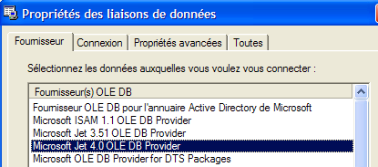
- نختار برنامج التشغيل [Microsoft Jet 4.0] وننتقل إلى لوحة [Connection]:

- باستخدام الزر [1]، حدد قاعدة بيانات ACCESS التي تم إنشاؤها للتو، ثم أكمل إعداد الاتصال بالنقر فوق الزر [Finish]. يظهر الاتصال الذي أنشأته الآن في قائمة الاتصالات المتاحة:

- يمنحنا النقر المزدوج على جدول [ARTICLES] إمكانية الوصول إلى محتوياته:

- يمكنك بعد ذلك إضافة صفوف إلى الجدول أو تعديلها أو حذفها.
- في مستكشف الخادم، حدد الاتصال الجديد للوصول إلى ورقة الخصائص الخاصة به:

- من المفيد معرفة سلسلة الاتصال. سنستخدمها للاتصال بقاعدة البيانات:
Provider=Microsoft.Jet.OLEDB.4.0;User ID=Admin;Data Source=D:\data\serge\databases\access\articles\articles.mdb;Mode=Share Deny None;Extended Properties="";Jet OLEDB:System database="";Jet OLEDB:Registry Path="";Jet OLEDB:Engine Type=5;Jet OLEDB:Database Locking Mode=1;Jet OLEDB:Global Partial Bulk Ops=2;Jet OLEDB:Global Bulk Transactions=1;Jet OLEDB:Create System Database=False;Jet OLEDB:Encrypt Database=False;Jet OLEDB:Don't Copy Locale on Compact=False;Jet OLEDB:Compact Without Replica Repair=False;Jet OLEDB:SFP=False
- من هذه السلسلة، سنحتفظ فقط بالعناصر التالية:
2.4.5.2. كود فئة [ArticlesDaoOleDb]
تشبه فئة [ArticlesDaoOleDb] إلى حد كبير فئة [ArticlesDaoPlainODBC] التي تمت مناقشتها سابقًا. لذلك، سنقوم فقط بإدراج التغييرات التي تم إجراؤها على الإصدار السابق:
- توجد الفئات المطلوبة في مساحة الاسم [System.Data.OleDb] بدلاً من مساحة الاسم [System.Data.Odbc]
- أصبح اتصال [OdbcConnection] الآن من النوع [OleDbConnection]
- أصبحت كائنات [OdbcCommand] الآن من النوع [OleDbCommand]
يقبل منشئ الفئة معلمة واحدة: سلسلة اتصال قاعدة البيانات:
' manufacturer
Public Sub New(ByVal connectString As String)
' connectString: source connection string OleDb: source connection string connectString: source connection string OleDb: source connection string
'we instantiate the connection
connexion = New OleDbConnection(connectString)
' prepare SQL requests
...
End Sub
فيما يلي الكود الكامل لفئة [ArticlesDaoOleDb]:
Imports System
Imports System.Collections
Imports System.Data.OleDb
Namespace istia.st.articles.dao
Public Class ArticlesDaoOleDb
Implements istia.st.articles.dao.IArticlesDao
' private fields
Private connexion As OleDbConnection = Nothing
Private insertCommand As OleDbCommand
Private updatecommand As OleDbCommand
Private deleteSomeCommand As OleDbCommand
Private selectSomeCommand As OleDbCommand
Private updateStockCommand As OleDbCommand
Private deleteAllCommand As OleDbCommand
Private selectAllCommand As OleDbCommand
' manufacturer
Public Sub New(ByVal connectString As String)
' connectString: source connection string OleDb: source connection string connectString: source connection string OleDb: source connection string
'we instantiate the connection
connexion = New OleDbConnection(connectString)
' prepare SQL requests
insertCommand = New OleDbCommand("insert into ARTICLES(id, nom, prix, stockactuel, stockminimum) values (?,?,?,?,?)", connexion)
updatecommand = New OleDbCommand("update ARTICLES set nom=?, prix=?, stockactuel=?, stockminimum=? where id=?", connexion)
deleteSomeCommand = New OleDbCommand("delete from ARTICLES where id=?", connexion)
selectSomeCommand = New OleDbCommand("select id, nom, prix, stockactuel, stockminimum from ARTICLES where id=?", connexion)
updateStockCommand = New OleDbCommand("update ARTICLES set stockactuel=stockactuel+? where id=? and (stockactuel+?)>=0", connexion)
selectAllCommand = New OleDbCommand("select id, nom, prix, stockactuel, stockminimum from ARTICLES", connexion)
deleteAllCommand = New OleDbCommand("delete from ARTICLES", connexion)
End Sub
Public Function ajouteArticle(ByVal unArticle As Article) As Integer Implements IArticlesDao.ajouteArticle
' exclusive section
SyncLock Me
' prepare the insertion request
With insertCommand.Parameters
.Clear()
.Add(New OleDbParameter("id", unArticle.id))
.Add(New OleDbParameter("nom", unArticle.nom))
.Add(New OleDbParameter("prix", unArticle.prix))
.Add(New OleDbParameter("stockactuel", unArticle.stockactuel))
.Add(New OleDbParameter("stockminimum", unArticle.stockminimum))
End With
Try
'it is executed
Return executeUpdate(insertCommand)
Catch ex As Exception
'query error
Throw New Exception(String.Format("Erreur à l'ajout de l'article [{0}] : {1}", unArticle.ToString, ex.Message))
End Try
End SyncLock
End Function
Public Function changerStockArticle(ByVal idArticle As Integer, ByVal mouvement As Integer) As Integer Implements IArticlesDao.changerStockArticle
' exclusive section
SyncLock Me
' prepare the stock update request
With updateStockCommand.Parameters
.Clear()
.Add(New OleDbParameter("mvt1", mouvement))
.Add(New OleDbParameter("id", idArticle))
.Add(New OleDbParameter("mvt2", mouvement))
End With
'it is executed
Try
Return executeUpdate(updateStockCommand)
Catch ex As Exception
'query error
Throw New Exception(String.Format("Erreur lors du changement de stock [idArticle={0}, mouvement={1}] : [{2}]", idArticle, mouvement, ex.Message))
End Try
End SyncLock
End Function
Public Sub clearAllArticles() Implements IArticlesDao.clearAllArticles
' exclusive section
SyncLock Me
Try
'execute the insertion request
executeUpdate(deleteAllCommand)
Catch ex As Exception
'query error
Throw New Exception(String.Format("Erreur lors de la suppression des articles : {0}", ex.Message))
End Try
End SyncLock
End Sub
Public Function getAllArticles() As System.Collections.IList Implements IArticlesDao.getAllArticles
' exclusive section
SyncLock Me
Try
'execute the select query
Dim articles As IList = executeQuery(selectAllCommand)
'we return the list
Return articles
Catch ex As Exception
'query error
Throw New Exception(String.Format("Erreur lors de l'obtention des articles [select id,nom,prix,stockactuel,stockminimum from articles]: {0}", ex.Message))
End Try
End SyncLock
End Function
Public Function getArticleById(ByVal idArticle As Integer) As Article Implements IArticlesDao.getArticleById
' exclusive section
SyncLock Me
' prepare the select query
With selectSomeCommand.Parameters
.Clear()
.Add(New OleDbParameter("id", idArticle))
End With
'it is executed
Try
'execute the query
Dim articles As IList = executeQuery(selectSomeCommand)
'we test if we've found the article
If articles.Count = 0 Then Return Nothing
'we return the item
Return CType(articles.Item(0), Article)
Catch ex As Exception
'query error
Throw New Exception(String.Format("Erreur lors de la recherche de l'article [{0} : {1}", idArticle, ex.Message))
End Try
End SyncLock
End Function
Public Function modifieArticle(ByVal unArticle As Article) As Integer Implements IArticlesDao.modifieArticle
' exclusive section
SyncLock Me
' prepare the update request
With updatecommand.Parameters
.Clear()
.Add(New OleDbParameter("nom", unArticle.nom))
.Add(New OleDbParameter("prix", unArticle.prix))
.Add(New OleDbParameter("stockactuel", unArticle.stockactuel))
.Add(New OleDbParameter("stockminimum", unArticle.stockactuel))
.Add(New OleDbParameter("id", unArticle.id))
End With
' it is executed
Try
'execute the insertion request
Return executeUpdate(updatecommand)
Catch ex As Exception
'query error
Throw New Exception("Erreur lors de la modification de l'article [" + unArticle.ToString + "]", ex)
End Try
End SyncLock
End Function
Public Function supprimeArticle(ByVal idArticle As Integer) As Integer Implements IArticlesDao.supprimeArticle
' exclusive section
SyncLock Me
' prepare the delete request
With deleteSomeCommand.Parameters
.Clear()
.Add(New OleDbParameter("id", idArticle))
End With
'it is executed
Try
'execute the delete request
Return executeUpdate(deleteSomeCommand)
Catch ex As Exception
'query error
Throw New Exception(String.Format("Erreur lors de la suppression de l'article [id={0}] : {1}", idArticle, ex.Message))
End Try
End SyncLock
End Function
Private Function executeQuery(ByVal query As OleDbCommand) As IList
' query execution SELECT
' declaration of the object providing access to all rows in the result table
Dim myReader As OleDbDataReader = Nothing
Try
'create a connection to BDD
connexion.Open()
'execute the query
myReader = query.ExecuteReader()
'declare a list of items and return it later
Dim articles As IList = New ArrayList
Dim unArticle As Article
While myReader.Read()
'we prepare an article with the reader's values
unArticle = New Article
unArticle.id = myReader.GetInt32(0)
unArticle.nom = myReader.GetString(1)
unArticle.prix = myReader.GetDouble(2)
unArticle.stockactuel = myReader.GetInt32(3)
unArticle.stockminimum = myReader.GetInt32(4)
'add the item to the list
articles.Add(unArticle)
End While
'returns the result
Return articles
Finally
' freeing up resources
If Not myReader Is Nothing And Not myReader.IsClosed Then myReader.Close()
If Not connexion Is Nothing Then connexion.Close()
End Try
End Function
Private Function executeUpdate(ByVal sqlCommand As OleDbCommand) As Integer
' execute an update request
Try
'create a connection to BDD
connexion.Open()
'execute the query
Return sqlCommand.ExecuteNonQuery()
Finally
' freeing up resources
If Not connexion Is Nothing Then connexion.Close()
End Try
End Function
End Class
End Namespace
يُنصح القارئ بمراجعة هذا الكود في ضوء التعليقات على فئة [ArticlesDaoPlainODBC] التي تم تقديمها سابقًا.
2.4.5.3. إنشاء تجميع طبقة [dao]
يحتوي مشروع Visual Studio الجديد على الهيكل التالي:

تم تكوين المشروع لإنشاء مكتبة DLL باسم [webarticles-dao.dll]:
 |  |
2.4.5.4. اختبارات NUnit لطبقة [dao]
2.4.5.4.1. فئة اختبار NUnit
فئة اختبار NUnit لفئة التنفيذ [ArticlesDaoOleDb] هي نفسها المستخدمة لفئة [ArticlesDaoPlainODBC] (انظر القسم 2.3.3.2). نتبع نهجًا مشابهًا لإعداد اختبار NUnit للفئة:
- نقوم بإنشاء المجلد [tests] (على اليمين) في مجلد Visual Studio الخاص بمشروع [dao-oledb] عن طريق نسخ المجلد [tests] من مشروع [dao-odbc] (على اليسار):
 |
- في مجلد [tests] الخاص بمشروع [dao-oledb]، نستبدل ملف DLL [webarticles-dao.dll] بملف DLL [webarticles-dao.dll] الذي تم إنشاؤه بواسطة مشروع [dao-oledb]
- نقوم بتعديل ملف التكوين [spring-config.xml] لإنشاء مثيل للفئة الجديدة [ArticlesDaoOleDb]:
تعليقات:
- السطر 7، أصبح الكائن [articlesdao] مرتبطًا الآن بمثيل لفئة [ArticlesDaoOleDb]
- تحتوي هذه الفئة على منشئ بوسيلة واحدة: سلسلة الاتصال بقاعدة بيانات OleDb ACCESS - السطر 9
2.4.5.4.2. الاختبارات
نحن جاهزون للاختبار. باستخدام تطبيق [Nunit-Gui]، نقوم بتحميل ملف DLL [test-webarticles-dao.dll] من المجلد [tests] أعلاه ونقوم بتشغيل اختبار [testGetAllArticles]:
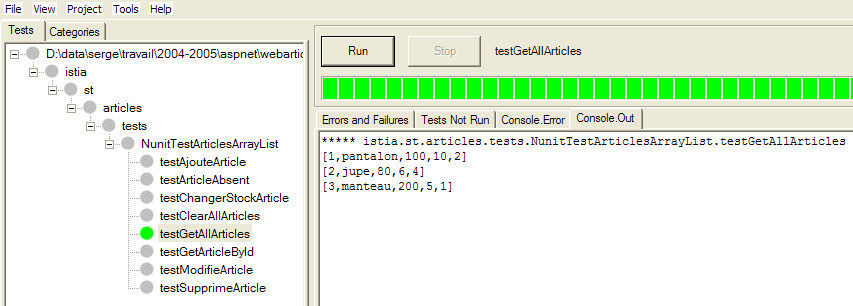
على الرغم من الاسم [NUnitTestArticlesDaoArrayList] الذي أُطلق في البداية على فئة الاختبار، فإن الفئة [ArticlesDaoOleDb] هي التي يتم اختبارها هنا بالفعل. تُظهر لقطة الشاشة أننا استرجعنا بشكل صحيح المقالات التي وضعناها في الجدول [ARTICLES]. الآن، دعونا نجري جميع الاختبارات:

سيلاحظ القراء الذين يشاهدون هذا المستند على الشاشة أن جميع الاختبارات قد نجحت (اللون الأخضر).
2.4.5.5. دمج طبقة [dao] الجديدة في تطبيق [webarticles]
نتبع الإجراء الموضح في القسم 2.3.4. نقوم بإجراء التغييرات التالية على محتويات مجلد [runtime]:
- في مجلد [bin]، يتم استبدال ملف DLL الخاص بطبقة [dao] القديمة بملف DLL الخاص بطبقة [dao] الجديدة التي تم تنفيذها بواسطة فئة [ArticlesDaoOleDb]
- في [runtime]، يتم استبدال ملف التكوين [web.config] بملف يأخذ في الاعتبار فئة التنفيذ الجديدة:
تعليقات:
- تربط الأسطر 14–18 الكائن الفردي [articlesDao] بمثيل لفئة [ArticlesDaoOleDb] الجديدة. هذا هو التغيير الوحيد.
نحتفظ بنفس تكوين خادم الويب [Cassini] كما كان من قبل. نقوم بتهيئة جدول المنتج بالقيم التالية:
تأكد من أن قاعدة بيانات المقالات لا تستخدمها أي برامج مثل Visual Studio أو Access. باستخدام متصفح، نطلب عنوان URL [http://localhost/webarticles/main.aspx]:

 |
الآن دعونا نتحقق من محتويات جدول [ARTICLES] باستخدام Access:

تم شراء العناصر [pants] و [skirt]، وانخفضت مستويات مخزونهما بمقدار الكمية المشتراة. لم يتم شراء العنصر [coat] لأن الكمية المطلوبة تجاوزت الكمية المتوفرة في المخزون. ندعو القارئ إلى إجراء اختبارات إضافية.
2.5. فئة التنفيذ [ArticlesDaoFirebirdProvider]
2.5.1. مزود Firebird-net
لقد استخدمنا سابقًا مصدر بيانات [Firebird] عبر برنامج تشغيل ODBC. على الرغم من أن برامج تشغيل ODBC توفر قابلية عالية لإعادة استخدام الكود الذي يستخدمها، إلا أنها أقل كفاءة من برامج التشغيل المكتوبة خصيصًا لنظام إدارة قواعد البيانات المستهدف. يمكن استخدام نظام إدارة قواعد البيانات [Firebird] عبر مكتبة من الفئات المحددة التي يمكن تنزيلها من موقع Firebird على الويب [http://firebird.sourceforge.net/]. توفر صفحة التنزيلات الروابط التالية (أبريل 2005):
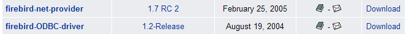
الرابط [firebird-net-provider] هو الرابط الذي يجب استخدامه لتنزيل فئات .NET للوصول إلى نظام إدارة قواعد البيانات Firebird. يؤدي تثبيت الحزمة إلى إنشاء مجلد مشابه لما يلي:
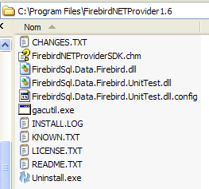
هناك عنصران يهماننا:
- [FirebirdSql.Data.Firebird.dll]: التجميع الذي يحتوي على فئات .NET للوصول إلى نظام إدارة قواعد البيانات Firebird
- [FirebirdNETProviderSDK.chm]: الوثائق الخاصة بهذه الفئات
بعد ذلك، لتمكين مشروع Visual Studio من استخدام هذه الفئات، سنقوم بأمرين:
- سنضع التجميع [FirebirdSql.Data.Firebird.dll] في مجلد [bin] الخاص بالمشروع
- نضيف نفس التجميع إلى مراجع المشروع
2.5.2. كود فئة [ArticlesDaoFirebirdProvider]
تشبه فئة [ArticlesDaoFirebirdProvider] إلى حد كبير فئة [ArticlesDaoSqlServer] التي تمت مناقشتها سابقًا. لذلك، سنسلط الضوء فقط على التغييرات التي تم إجراؤها مقارنةً بتلك النسخة:
- توجد الفئات المطلوبة في مساحة الاسم [FirebirdSql.Data.Firebird] بدلاً من مساحة الاسم [System.Data.SqlClient]
- أصبح اتصال [SqlConnection] الآن من النوع [FbConnection]
- أصبحت كائنات [SqlCommand] الآن من النوع [FbCommand]
- أصبحت كائنات [SqlParameter] الآن من النوع [FbParameter]
يقبل منشئ الفئة أربعة معلمات، يستخدمها لإنشاء سلسلة الاتصال بقاعدة البيانات:
' manufacturer
Public Sub New(ByVal serveur As String, ByVal databaseName As String, ByVal uid As String, ByVal password As String)
' server: name of the SGBD host machine
' databaseName: path to database
' uid: identity of the user logging in
' password: your password
...
End Sub
فيما يلي الكود الكامل لفئة [ArticlesDaoFirebirdProvider]:
Imports System
Imports System.Collections
Imports FirebirdSql.Data.Firebird
Namespace istia.st.articles.dao
Public Class ArticlesDaoFirebirdProvider
Implements istia.st.articles.dao.IArticlesDao
' private fields
Private connexion As FbConnection = Nothing
Private databasePath As String
Private insertCommand As FbCommand
Private updatecommand As FbCommand
Private deleteSomeCommand As FbCommand
Private selectSomeCommand As FbCommand
Private updateStockCommand As FbCommand
Private deleteAllCommand As FbCommand
Private selectAllCommand As FbCommand
' manufacturer
Public Sub New(ByVal serveur As String, ByVal databasePath As String, ByVal uid As String, ByVal password As String)
' server: name of the SGBD Firebird host machine
' databaseName: path to the database to be used
' uid: identity of the user connecting to the database
' password: your password
'retrieve the name of the database passed as an argument
Me.databasePath = databasePath
'we instantiate the connection
Dim connectString As String = String.Format("DataSource={0};Database={1};User={2};Password={3}", serveur, databasePath, uid, password)
connexion = New FbConnection(connectString)
' prepare SQL requests
insertCommand = New FbCommand("insert into ARTICLES(id, nom, prix, stockactuel, stockminimum) values (@id,@nom,@prix,@sa,@sm)", connexion)
updatecommand = New FbCommand("update ARTICLES set nom=@nom, prix=@prix, stockactuel=@sa, stockminimum=@sm where id=@id", connexion)
deleteSomeCommand = New FbCommand("delete from ARTICLES where id=@id", connexion)
selectSomeCommand = New FbCommand("select id, nom, prix, stockactuel, stockminimum from ARTICLES where id=@id", connexion)
updateStockCommand = New FbCommand("update ARTICLES set stockactuel=stockactuel+@mvt where id=@id and (stockactuel+@mvt)>=0", connexion)
selectAllCommand = New FbCommand("select id, nom, prix, stockactuel, stockminimum from ARTICLES", connexion)
deleteAllCommand = New FbCommand("delete from ARTICLES", connexion)
End Sub
Public Function ajouteArticle(ByVal unArticle As Article) As Integer Implements IArticlesDao.ajouteArticle
' exclusive section
SyncLock Me
' prepare the insertion request
With insertCommand.Parameters
.Clear()
.Add(New FbParameter("@id", unArticle.id))
.Add(New FbParameter("@nom", unArticle.nom))
.Add(New FbParameter("@prix", unArticle.prix))
.Add(New FbParameter("@sa", unArticle.stockactuel))
.Add(New FbParameter("@sm", unArticle.stockminimum))
End With
Try
'it is executed
Return executeUpdate(insertCommand)
Catch ex As Exception
'query error
Throw New Exception(String.Format("Erreur à l'ajout de l'article [{0}] : {1}", unArticle.ToString, ex.Message))
End Try
End SyncLock
End Function
Public Function changerStockArticle(ByVal idArticle As Integer, ByVal mouvement As Integer) As Integer Implements IArticlesDao.changerStockArticle
' exclusive section
SyncLock Me
' prepare the stock update request
With updateStockCommand.Parameters
.Clear()
.Add(New FbParameter("@mvt", mouvement))
.Add(New FbParameter("@id", idArticle))
End With
'it is executed
Try
Return executeUpdate(updateStockCommand)
Catch ex As Exception
'query error
Throw New Exception(String.Format("Erreur lors du changement de stock [idArticle={0}, mouvement={1}] : [{2}]", idArticle, mouvement, ex.Message))
End Try
End SyncLock
End Function
Public Sub clearAllArticles() Implements IArticlesDao.clearAllArticles
' exclusive section
SyncLock Me
Try
'execute the insertion request
executeUpdate(deleteAllCommand)
Catch ex As Exception
'query error
Throw New Exception(String.Format("Erreur lors de la suppression des articles : {0}", ex.Message))
End Try
End SyncLock
End Sub
Public Function getAllArticles() As System.Collections.IList Implements IArticlesDao.getAllArticles
' exclusive section
SyncLock Me
Try
'execute the select query
Dim articles As IList = executeQuery(selectAllCommand)
'we return the list
Return articles
Catch ex As Exception
'query error
Throw New Exception(String.Format("Erreur lors de l'obtention des articles [select id,nom,prix,stockactuel,stockminimum from articles]: {0}", ex.Message))
End Try
End SyncLock
End Function
Public Function getArticleById(ByVal idArticle As Integer) As Article Implements IArticlesDao.getArticleById
' exclusive section
SyncLock Me
' prepare the select query
With selectSomeCommand.Parameters
.Clear()
.Add(New FbParameter("@id", idArticle))
End With
'it is executed
Try
'execute the query
Dim articles As IList = executeQuery(selectSomeCommand)
'we test if we've found the article
If articles.Count = 0 Then Return Nothing
'we return the item
Return CType(articles.Item(0), Article)
Catch ex As Exception
'query error
Throw New Exception(String.Format("Erreur lors de la recherche de l'article [{0} : {1}", idArticle, ex.Message))
End Try
End SyncLock
End Function
Public Function modifieArticle(ByVal unArticle As Article) As Integer Implements IArticlesDao.modifieArticle
' exclusive section
SyncLock Me
' prepare the update request
With updatecommand.Parameters
.Clear()
.Add(New FbParameter("@nom", unArticle.nom))
.Add(New FbParameter("@prix", unArticle.prix))
.Add(New FbParameter("@sa", unArticle.stockactuel))
.Add(New FbParameter("@sm", unArticle.stockminimum))
.Add(New FbParameter("@id", unArticle.id))
End With
' it is executed
Try
'execute the insertion request
Return executeUpdate(updatecommand)
Catch ex As Exception
'query error
Throw New Exception("Erreur lors de la modification de l'article [" + unArticle.ToString + "]", ex)
End Try
End SyncLock
End Function
Public Function supprimeArticle(ByVal idArticle As Integer) As Integer Implements IArticlesDao.supprimeArticle
' exclusive section
SyncLock Me
' prepare the delete request
With deleteSomeCommand.Parameters
.Clear()
.Add(New FbParameter("@id", idArticle))
End With
'it is executed
Try
'execute the delete request
Return executeUpdate(deleteSomeCommand)
Catch ex As Exception
'query error
Throw New Exception(String.Format("Erreur lors de la suppression de l'article [id={0}] : {1}", idArticle, ex.Message))
End Try
End SyncLock
End Function
Private Function executeQuery(ByVal query As FbCommand) As IList
' query execution SELECT
' declaration of the object providing access to all rows in the result table
Dim myReader As FbDataReader = Nothing
Try
'create a connection to BDD
connexion.Open()
'execute the query
myReader = query.ExecuteReader()
'declare a list of items and return it later
Dim articles As IList = New ArrayList
Dim unArticle As Article
While myReader.Read()
'we prepare an article with the reader's values
unArticle = New Article
unArticle.id = myReader.GetInt32(0)
unArticle.nom = myReader.GetString(1)
unArticle.prix = myReader.GetDouble(2)
unArticle.stockactuel = myReader.GetInt32(3)
unArticle.stockminimum = myReader.GetInt32(4)
'add the item to the list
articles.Add(unArticle)
End While
'returns the result
Return articles
Finally
' freeing up resources
If Not myReader Is Nothing And Not myReader.IsClosed Then myReader.Close()
If Not connexion Is Nothing Then connexion.Close()
End Try
End Function
Private Function executeUpdate(ByVal updateCommand As FbCommand) As Integer
' execute an update request
Try
'create a connection to BDD
connexion.Open()
'execute the query
Return updateCommand.ExecuteNonQuery()
Finally
' freeing up resources
If Not connexion Is Nothing Then connexion.Close()
End Try
End Function
End Class
End Namespace
يُنصح القارئ بمراجعة هذا الكود في ضوء التعليقات على فئة [ArticlesDaoSqlServer] التي تم تقديمها سابقًا.
2.5.3. إنشاء تجميع طبقة [dao]
يحتوي مشروع Visual Studio الجديد على الهيكل التالي:
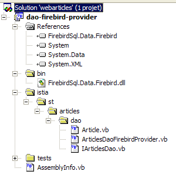
لاحظ وجود تجميع [FirebirdSql.Data.Firebird.dll] في مراجع المشروع. تم وضع ملف DLL هذا في مجلد [bin] الخاص بالمشروع. تم تكوين المشروع لإنشاء ملف DLL باسم [webarticles-dao.dll]:
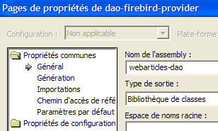 |  |
2.5.4. اختبارات NUnit لطبقة [dao]
2.5.4.1. فئة اختبار NUnit
فئة اختبار NUnit لفئة التنفيذ [ArticlesDaoFirebirdProvider] هي نفسها المستخدمة لفئة [ArticlesDaoPlainODBC] (انظر القسم 2.3.3.2). نتبع نهجًا مشابهًا لإعداد اختبار NUnit لفئة [ArticlesDaoFirebirdProvider]:
- نقوم بإنشاء المجلد [tests] (على اليمين) في مجلد Visual Studio الخاص بمشروع [dao-firebird-provider] عن طريق نسخ المجلد [bin] من مشروع اختبار طبقة [dao-odbc] (على اليسار):
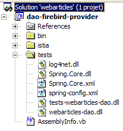 |
- في مجلد [tests]، نستبدل ملف DLL [webarticles-dao.dll] بملف DLL [webarticles-dao.dll] الذي تم إنشاؤه من مشروع [dao-firebird-provider]
- نقوم بتعديل ملف التكوين [spring-config.xml] لإنشاء مثيل للفئة الجديدة [ArticlesDaoFirebirdProvider]:
تعليقات:
- السطر 7، أصبح الكائن [articlesdao] مرتبطًا الآن بمثيل لفئة [ArticlesDaoFirebirdProvider]
- تحتوي هذه الفئة على منشئ بأربعة معلمات
- جهاز مضيف نظام إدارة قواعد البيانات - السطر 9
- مسار قاعدة بيانات Firebird - السطر 12
- تسجيل دخول المستخدم المتصل - السطر 15
- كلمة المرور الخاصة به - السطر 18
2.5.4.2. الاختبارات
يتم ملء الجدول [ARTICLES] في مصدر البيانات بالعناصر التالية (استخدم IBExpert):

نحن جاهزون لإجراء الاختبارات. باستخدام تطبيق [Nunit-Gui]، نقوم بتحميل ملف DLL [test-webarticles-dao.dll] من المجلد [tests] أعلاه ونقوم بتشغيل اختبار [testGetAllArticles]:

على الرغم من الاسم [NUnitTestArticlesDaoArrayList] الذي أُطلق في البداية على فئة الاختبار، فإن الفئة [ArticlesDaoFirebirdProvider] هي التي يتم اختبارها هنا بالفعل. توضح لقطة الشاشة أننا استرجعنا بشكل صحيح المقالات التي وضعناها في جدول [ARTICLES]. الآن، دعونا نجري جميع الاختبارات:

سيلاحظ القراء الذين يشاهدون هذا المستند على الشاشة أن جميع الاختبارات قد نجحت (باللون الأخضر). ما لا يمكنهم رؤيته هو أن الاختبارات تم تشغيلها بشكل أسرع بكثير مقارنة بقاعدة بيانات المقالات التي تم الوصول إليها عبر برنامج تشغيل ODBC في التنفيذ الأول.
2.5.5. دمج طبقة [dao] الجديدة في تطبيق [webarticles]
نتبع الإجراء الذي تم شرحه مرتين بالفعل، ولا سيما في القسم 2.3.4. نقوم بإجراء التغييرات التالية على محتويات مجلد [runtime]:
- في مجلد [bin]، يتم استبدال مكتبة DLL الخاصة بطبقة [dao] القديمة بمكتبة DLL الخاصة بطبقة [dao] الجديدة التي تم تنفيذها بواسطة فئة [ArticlesDaoFirebirdProvider]. كما نضع مكتبة DLL المطلوبة من قبل Firebird [FirebirdSql.Data.Firebird.dll] هناك:

- في [runtime]، يتم استبدال ملف التكوين [web.config] بملف يأخذ في الاعتبار فئة التنفيذ الجديدة:
تعليقات:
- تربط الأسطر 14–27 الكائن الفردي [articlesDao] بمثيل لفئة [ArticlesDaoFirebirdProvider] الجديدة. هذا هو التغيير الوحيد.
نحن جاهزون للاختبار. نقوم بتكوين خادم الويب [Cassini] كما في الاختبارات السابقة. نقوم بتهيئة جدول articles بالقيم التالية:

باستخدام متصفح، ندخل عنوان URL [http://localhost/webarticles/main.aspx]:

 |
الآن دعونا نتحقق من محتويات جدول [ARTICLES]:

تم شراء العنصرين [pencil] و [50-sheet pad]، وانخفضت مستويات مخزونهما بمقدار الكمية المشتراة. لم يتم شراء العنصر [fountain pen] لأن الكمية المطلوبة تجاوزت الكمية المتوفرة في المخزون. ندعو القارئ إلى إجراء اختبارات إضافية.
2.5.6. فئة التنفيذ [ArticlesDaoSqlMap]
2.5.6.1. منتج Ibatis SqlMap
لقد كتبنا أربعة تطبيقات مختلفة لطبقة [dao] لتطبيقنا [webarticles]. في كل حالة، تمكنا من دمج طبقة [dao] الجديدة في تطبيق [webarticles] دون إعادة ترجمة الطبقتين الأخريين، [web] و [domain]. وقد تحقق ذلك، للتذكير، من خلال خيارين معماريين:
- الوصول إلى الطبقات عبر الواجهات
- دمج الطبقات باستخدام Spring
نريد أن نخطو خطوة أخرى إلى الأمام. على الرغم من اختلافها، فإن تطبيقاتنا الأربعة لطبقة [dao] تشترك في أوجه تشابه لافتة للنظر. بمجرد كتابة التطبيق الأول، تم إنشاء الثلاثة الأخرى بالكامل تقريبًا عن طريق النسخ واللصق واستبدال بعض الكلمات الرئيسية بأخرى. ومع ذلك، بقيت المنطقية دون تغيير. قد يتساءل المرء عما إذا كان من الممكن الحصول على تطبيق واحد يحررنا من الطرق المختلفة للوصول إلى البيانات. لقد استخدمنا أربعة:
- الوصول عبر برنامج تشغيل ODBC إلى مصدر بيانات ODBC
- الوصول المباشر إلى قاعدة بيانات SQL Server
- الوصول عبر برنامج تشغيل Ole DB إلى مصدر بيانات Ole DB
- الوصول المباشر إلى قاعدة بيانات Firebird
تتيح أداة Ibatis SqlMap [[http://www.ibatis.com/]] تطوير طبقات الوصول إلى البيانات التي تكون مستقلة عن الطبيعة الفعلية لمصدر البيانات. ويتم توفير الوصول إلى البيانات من خلال:
- ملفات التكوين التي تحتوي على معلومات تحدد مصدر البيانات والعمليات التي سيتم إجراؤها عليه
- مكتبة فئات تستخدم هذه المعلومات للوصول إلى البيانات
تم تطوير أداة Ibatis SqlMap في البداية لمنصة Java. تم نقلها مؤخرًا إلى منصة .NET ويبدو أنها تحتوي على بعض الأخطاء (رأي شخصي يتطلب تحققًا دقيقًا). ومع ذلك، نظرًا لأن الأداة أثبتت كفاءتها على منصة Java، يبدو أن تقديم إصدار .NET أمر يستحق العناء.
2.5.6.2. أين يمكنني العثور على IBATIS SqlMap ؟
الموقع الإلكتروني الرئيسي لـ Firebird هو [http://www.ibatis.com/]. توفر صفحة التنزيلات الروابط التالية:

حدد رابط [Stable Binaries]، الذي ينقلك إلى [SourceForge.net]. اتبع عملية التنزيل حتى تكتمل. ستتلقى ملف ZIP يحتوي على الملفات التالية:

في مشروع Visual Studio الذي يستخدم iBatis SqlMap، عليك القيام بأمرين:
- ضع الملفات المذكورة أعلاه في مجلد [bin] الخاص بالمشروع
- إضافة مرجع إلى كل من هذه الملفات إلى المشروع
2.5.6.3. ملفات تكوين iBatis SqlMap
سيتم تعريف مصدر بيانات [SqlMap] باستخدام ملفات التكوين التالية:
- providers.config: يحدد مكتبات الفئات التي سيتم استخدامها للوصول إلى البيانات
- sqlmap.config: يحدد إعدادات الاتصال
- ملفات التعيين: تحدد العمليات التي سيتم إجراؤها على البيانات
المنطق الكامن وراء هذه الملفات هو كما يلي:
- للوصول إلى البيانات، سنحتاج إلى اتصال. ولتمثيل ذلك، فقد صادفنا بالفعل عدة فئات: OdbcConnection، SqlConnection، OleDbConnection، FbConnection. سنحتاج أيضًا إلى كائن [Command] لإصدار استعلامات SQL: OdbcCommand، SqlCommand، OleDbCommand، FbCommand، إلخ. في ملف [providers.config]، نحدد جميع الفئات التي نحتاجها.
- يحدد ملف [sqlmap.config] بشكل أساسي سلسلة الاتصال بقاعدة البيانات التي تحتوي على البيانات. سيتم فتح اتصال قاعدة البيانات عن طريق إنشاء مثيل لفئة [Connection] المحددة في [providers.config]، والتي سيتم تمرير سلسلة الاتصال المحددة في [sqlmap.config] إلى منشئها.
- تحدد ملفات التعيين:
- الارتباطات بين الصفوف في جداول البيانات وفئات .NET، التي ستحتوي مثيلاتها على هذه الصفوف
- عمليات SQL التي سيتم تنفيذها. يتم تحديد هذه العمليات بواسطة اسم. يقوم كود .NET بتنفيذ هذه العمليات عبر أسمائها، مما يزيل كل كود SQL من كود .NET.
2.5.6.4. ملفات التكوين لمشروع [dao-sqlmap]
دعونا نفحص الطبيعة الدقيقة لملفات تكوين SqlMap باستخدام مثال. سننظر في الحالة التي يكون فيها مصدر البيانات هو مصدر Firebird ODBC من القسم 2.3.3.1.
2.5.6.4.1. providers.config
ملف [providers.config] لمصدر ODBC هو كما يلي:
تعليقات:
- يتم تضمين ملف [providers.config] مع حزمة [SqlMap]. ويوفر هذا الملف العديد من الموفرين القياسيين. وقد تم أخذ الكود أعلاه مباشرة من هذا الملف.
- يحتوي <provider> على اسم — السطر 6 — والذي يمكن أن يكون أي شيء
- يمكن تمكين <provider> [enabled=true] أو تعطيله [enabled=false]. في حالة التمكين، يجب أن تكون مكتبة DLL المشار إليها في السطر 8 متاحة. يمكن أن يحتوي ملف [providers.config] على عدة علامات <provider>.
- السطر 8 - اسم التجميع الذي يحتوي على الفئات المحددة في الأسطر 9-15
- السطر 9 - الفئة التي سيتم استخدامها لإنشاء اتصال
- السطر 10 - الفئة التي سيتم استخدامها لإنشاء كائن [Command] لتنفيذ أوامر SQL
- السطر 11 - الفئة التي سيتم استخدامها لإدارة معلمات أمر SQL المعلم
- السطر 12 - فئة التعداد لأنواع البيانات المحتملة لحقول الجدول
- السطر 13 - اسم خاصية كائن [Parameter] التي تحتوي على نوع قيمة هذه المعلمة
- السطر 14 - اسم فئة [Adapter] المستخدمة لإنشاء كائنات [DataSet] من مصدر البيانات
- السطر 15 - اسم فئة [CommandBuilder] التي، عند ربطها بكائن [Adapter]، تقوم تلقائيًا بإنشاء خصائص [InsertCommand، DeleteCommand، UpdateCommand] الخاصة بها من خاصية [SelectCommand] الخاصة بها
- الأسطر 16-19 – تحدد كيفية معالجة أوامر SQL المعلمة. اعتمادًا على الموقف، يمكنك كتابة ما يلي، على سبيل المثال:
أو
في الحالة الأولى، هذه معلمات موضعية رسمية. يجب توفير قيمها الفعلية بترتيب المعلمات الرسمية. في الحالة الثانية، هذه معلمات مسماة. يتم توفير قيمة لمثل هذه المعلمة عن طريق تحديد اسمها. لم يعد الترتيب مهمًا.
- السطر 16 - يشير إلى أن مصادر ODBC تستخدم معلمات موضعية
- الأسطر 17-19 – تتعلق بالمعلمات المسماة. لا توجد أي منها هنا.
تسمح هذه المعلومات لـ SqlMap بمعرفة، على سبيل المثال، الفئة التي يجب أن تقوم بإنشاء مثيل لها لإنشاء اتصال. هنا، ستكون الفئة [OdbcConnection] (السطر 9).
2.5.6.4.2. sqlmap.config
يحدد ملف [providers.config] الفئات التي يجب استخدامها للوصول إلى مصدر ODBC. ولا يحدد أي مصادر ODBC. يقوم ملف [sqlmap.config] بذلك:
تعليقات:
- السطر 3 - نحدد ملف خصائص [properties.xml]. يحدد هذا الملف أزواج المفاتيح والقيم. يمكن أن تكون المفاتيح أي شيء. يتم الحصول على القيمة المرتبطة بالمفتاح C باستخدام الترميز ${C} في [sqlmap.config]. فيما يلي ملف [properties.xml] الذي سيتم ربطه بملف [sqlmap.config] السابق:
السطر 3 - يتم تعريف المفتاح [provider]. قيمته هي اسم العلامة <provider> التي سيتم استخدامها في [providers.config]
السطر 4 - يتم تعريف مفتاح [connectionString]. قيمته هي سلسلة الاتصال التي سيتم استخدامها لفتح اتصال بمصدر بيانات Firebird ODBC.
- الأسطر 4-7 - معلمات التكوين:
- السطر 5 - سيتم تحديد استعلامات SQL بواسطة اسم قد يكون هو نفسه جزءًا من مساحة أسماء. يشير [useStatementNamespaces="false"] إلى أنه لن يتم استخدام مساحات الأسماء.
- السطر 6 - لدى SqlMap استراتيجيات تخزين مؤقت متنوعة لتقليل الوصول إلى مصدر البيانات. يشير [cacheModelsEnabled="false"] إلى أنه لن يتم استخدام أي منها.
- الأسطر 9-13 – يتم تعريف خصائص مصدر البيانات:
- السطر 10 - اسم <provider> من [providers.config] المراد استخدامه
- السطر 11 - سلسلة الاتصال بمصدر البيانات
- السطر 12 - مدير المعاملات. لم نستخدمه هنا، لكننا تركنا السطر لأنه كان موجودًا في ملف التوزيع القياسي.
- الأسطر 14-16 – قائمة بالملفات التي تحدد عمليات SQL التي سيتم تنفيذها على مصدر البيانات.
- السطر 15 - يحدد ملف التعيين [articles.xml]
2.5.6.4.3. articles.xml
يخدم هذا الملف غرضين:
- تحديد تعيين كائن لجداول مصدر البيانات. في أبسط الحالات، يعادل هذا ربط فئة بصف في جدول.
- تحديد عمليات SQL المعلمة وتسميتها.
سنستخدم ملف [articles.xml] التالي:
تعليقات:
- الأسطر 4-11 - نحدد التعيين بين صف في جدول [ARTICLES] لمصدر البيانات وفئة [istia.st.articles.dao.Article]. يرتبط كل عمود في الجدول بخاصية من خصائص فئة [Article]. يسمح هذا التعيين لـ [SqlMap] بإنشاء نتيجة لعملية SQL SELECT. سيتم وضع كل صف من نتائج SELECT في كائن [Article] وفقًا لقواعد التعيين.
- السطر 5 - يتم تضمين التعيين في علامة <resultMap> ويتم تسميته باستخدام السمة [id="article"]. يتم تحديد الفئة المرتبطة بواسطة السمة [class="istia.st.articles.dao.Article"].
- الأسطر 14–44 – يتم تعريف عمليات SQL المطلوبة
- الأسطر 16–18 – يتم تعريف عملية SELECT باسم [getAllArticles]
- السطر 16 - عملية SELECT تسمى [name="getAllArticles"] ويتم تعريف التعيين المطلوب باستخدامه بواسطة السمة [resultMap="article"]. يشير هذا إلى التعيين في الأسطر 5–11
- السطر 17 – نص أمر SQL المراد تنفيذه
- الأسطر 20–22 – نحدد أمر SQL-Delete [clearAllArticles] لمسح جدول المقالات.
- الأسطر 24–27 – نحدد الأمر SQL-Insert [insertArticle] لإضافة عنصر جديد إلى جدول العناصر. هذا استعلام معلم باستخدام العناصر (#id#، #name#، #price#، #currentStock#، #minStock#). ستأتي قيم هذه العناصر الخمسة من كائن [Article] يتم تمريره كمعلمة: [parameterClass="istia.st.articles.dao.Article"]. يجب أن يحتوي كائن المعلمة على الخصائص (id، name، price، currentStock، minimumStock) المشار إليها بواسطة الأمر SQL المعلم.
- الأسطر 29-31 - نحدد أمر SQL Delete [deleteArticle] المخصص لحذف عنصر رقم #value# معروف. سيتم تمرير هذا الرقم كمعلمة: [parameterClass="int"]. هذه قاعدة عامة. عندما تكون المعلمة فريدة، تتم الإشارة إليها بواسطة الكلمة الرئيسية #value# في نص أمر SQL.
- الأسطر 33–35 – نحدد أمر SQL-Update [modifyArticle] لتعديل عنصر رقم #value# معروف. كما هو الحال مع الأمر [insertArticle]، ستأتي المعلومات الخمس المطلوبة من خصائص كائن [istia.st.articles.dao.Article].
- الأسطر 37-39 – نحدد الأمر SQL-Select [getArticleById]، الذي يسترد السجل الخاص بعنصر رقم معروف.
- الأسطر 41–43 - نحدد الأمر SQL-Update [changerStockArticle]، الذي يعدل حقل [stockactuel] لعنصر رقم معروف. ستوجد المعلومات المطلوبة - #id# للعنصر وزيادة المخزون #mouvement# - في قاموس: [parameterClass="Hashtable"]. يجب أن يحتوي هذا القاموس على مفتاحين: id و mouvement. سيتم استخدام القيم المرتبطة بهذين المفتاحين في أمر SQL.
2.5.6.4.4. موقع ملفات التكوين
سننظر في سيناريوهين مختلفين:
- في حالة اختبار Nunit، سيتم وضع ملفات التكوين [SqlMap] في نفس المجلد الذي توجد فيه الملفات الثنائية التي يتم اختبارها.
- في حالة تطبيق الويب، سيتم وضعها في جذر التطبيق.
2.5.6.5. واجهة برمجة تطبيقات SqlMap
توجد فئات SqlMap في ملفات DLL التي يتم وضعها عادةً في مجلد [bin] الخاص بالتطبيق:

يجب على التطبيقات التي تستخدم فئات SqlMap استيراد مساحة الاسم [IBatisNet.DataMapper]:
يتم تنفيذ جميع عمليات SQL من خلال عنصر فريد من نوع [Mapper]، وهي فئة في مساحة الاسم [IBatisNet.DataMapper]. يتم الحصول على العنصر الفريد على النحو التالي:
لتنفيذ الأمر SqlMap [getAllArticles]، نكتب:
- تُرجع الطريقة [QueryForList] نتيجة أمر SELECT كقائمة
- المعلمة الأولى هي اسم أمر SQL المراد تنفيذه (انظر articles.xml)
- المعلمة الثانية هي المعلمة التي سيتم تمريرها إلى استعلام SQL. يجب أن تتوافق مع سمة [parameterClass] لأمر SqlMap. في [articles.xml]، لدينا [parameterClass=Nothing]. لذلك، نمرر مؤشرًا فارغًا هنا.
- النتيجة من النوع IList. يتم تحديد الكائنات في هذه القائمة بواسطة السمة [resultMap] لأمر SQL-select: [resultMap="article"]. "article" هو اسم التعيين:
الفئة المرتبطة بهذا التعيين هي [istia.st.articles.dao.Article]. في النهاية، المتغير [articles] المحدد أعلاه هو قائمة من كائنات [istia.st.articles.dao.Article]. وبذلك نكون قد استرجعنا جدول [ARTICLES] بالكامل في عبارة واحدة. إذا كان جدول [ARTICLES] فارغًا، نحصل على كائن [IList] يحتوي على 0 عنصر.
لتنفيذ الأمر SqlMap [getArticleById]، نكتب:
- تسترد طريقة [QueryForObject] نتيجة أمر SELECT الذي يُرجع صفًا واحدًا فقط
- المعلمة الأولى هي اسم أمر SqlMap المراد تنفيذه
- المعلمة الثانية هي المعلمة التي سيتم تمريرها إلى استعلام SQL. يجب أن تتوافق مع سمة [parameterClass] لأمر SqlMap. في [articles.xml]، لدينا [parameterClass="int"]. لذلك، نمرر هنا عددًا صحيحًا يمثل معرف المقالة التي يتم البحث عنها.
- النتيجة من النوع Object. إذا لم يُرجع الأمر SELECT أي صفوف، تكون النتيجة مؤشرًا فارغًا (لا شيء).
لتنفيذ أمر SqlMap [insertArticle]، نكتب:
- تسمح لك طريقة [Insert] بتنفيذ أوامر SQL INSERT
- المعلمة الأولى هي اسم أمر SqlMap المراد تنفيذه
- المعلمة الثانية هي المعلمة التي سيتم تمريرها إليه. يجب أن تتوافق مع سمة [parameterClass] لأمر SqlMap. في [articles.xml]، لدينا [parameterClass="istia.st.articles.dao.Article"]. لذلك، نمرر هنا كائنًا من النوع [istia.st.articles.dao.Article].
لتنفيذ أمر SqlMap [deleteArticle]، نكتب:
- تسمح لك طريقة [Delete] بتنفيذ أوامر SQL DELETE
- المعلمة الأولى هي اسم أمر SQL المراد تنفيذه
- المعلمة الثانية هي المعلمة التي سيتم تمريرها إليها. يجب أن تتوافق مع سمة [parameterClass] لأمر SqlMap. في [articles.xml]، لدينا [parameterClass="int"]. لذلك، نمرر هنا معرف المقالة المراد حذفها.
- نتيجة طريقة [Delete] هي عدد الصفوف التي تم حذفها
وبالمثل، لتنفيذ أمر SqlMap [clearAllArticles]، نكتب:
لتنفيذ الأمر SqlMap [modifyArticle]، نكتب:
- تسمح لك طريقة [Update] بتنفيذ أوامر SQL UPDATE
- المعلمة الأولى هي اسم أمر SqlMap المراد تنفيذه
- المعلمة الثانية هي المعلمة التي سيتم تمريرها إليها. يجب أن تتوافق مع سمة [parameterClass] لأمر SqlMap. في [articles.xml]، لدينا [parameterClass="istia.st.articles.dao.Article"]. لذلك، نمرر هنا كائنًا من النوع [istia.st.articles.dao.Article].
- نتيجة طريقة [Update] هي عدد الصفوف التي تم تعديلها.
وبالمثل، لتنفيذ الأمر SqlMap [changerStockArticle]، سنكتب:
Dim paramètres As New Hashtable(2)
paramètres("id") = idArticle
paramètres("mouvement") = mouvement
' update
dim nbLignes as Integer= mappeur.Update("changerStockArticle", paramètres)
- المعلمة الثانية تتوافق مع سمة [parameterClass] لأمر SqlMap. في [articles.xml]، لدينا [parameterClass="Hashtable"]. يستخدم أمر SQL المعلم [changeItemStock] المعلمتين [id, movement]. لذلك، نمرر هنا قاموسًا يحتوي على هذين المفتاحين.
2.5.6.6. كود فئة [ArticlesDaoSqlMap]
بناءً على التفسيرات السابقة، يمكننا الآن كتابة فئة التنفيذ الجديدة التالية [ArticlesDaoSqlMap]:
Option Explicit On
Option Strict On
Imports System
Imports IBatisNet.DataMapper
Imports System.Collections
Namespace istia.st.articles.dao
Public Class ArticlesDaoSqlMap
Implements IArticlesDao
' private fields
Dim mappeur As SqlMapper = Mapper.Instance
' list of all items
Public Function getAllArticles() As IList Implements IArticlesDao.getAllArticles
SyncLock Me
Try
Return mappeur.QueryForList("getAllArticles", Nothing)
Catch ex As Exception
Throw New Exception("Echec de l'obtention de tous les articles : [" + ex.ToString + "]")
End Try
End SyncLock
End Function
' add an item
Public Function ajouteArticle(ByVal unArticle As Article) As Integer Implements IArticlesDao.ajouteArticle
SyncLock Me
Try
' unArticle : item to add
' insertion
mappeur.Insert("insertArticle", unArticle)
Return 1
Catch ex As Exception
Throw New Exception("Echec de l'ajout de l'article [" + unArticle.ToString + "] : [" + ex.ToString + "]")
End Try
End SyncLock
End Function
' deletes an article
Public Function supprimeArticle(ByVal idArticle As Integer) As Integer Implements IArticlesDao.supprimeArticle
SyncLock Me
Try
' id : id of item to be deleted
' delete
Return mappeur.Delete("deleteArticle", idArticle)
Catch ex As Exception
Throw New Exception("Erreur lors de la suppression de l'article d'id [" + idArticle.ToString + "] : [" + ex.ToString + "]")
End Try
End SyncLock
End Function
' modify an article
Public Function modifieArticle(ByVal unArticle As Article) As Integer Implements IArticlesDao.modifieArticle
SyncLock Me
Try
' update
Return mappeur.Update("modifyArticle", unArticle)
Catch ex As Exception
Throw New Exception("Erreur lors de la mise à jour de l'article [" + unArticle.ToString + "] : [" + ex.ToString + "]")
End Try
End SyncLock
End Function
' article search
Public Function getArticleById(ByVal idArticle As Integer) As Article Implements IArticlesDao.getArticleById
SyncLock Me
Try
' id: id of the item searched for
Return CType(mappeur.QueryForObject("getArticleById", idArticle), Article)
Catch ex As Exception
Throw New Exception("Erreur lors de la recherche de l'article d'id [" + idArticle.ToString + "] : [" + ex.ToString + "]")
End Try
End SyncLock
End Function
' delete all items
Public Sub clearAllArticles() Implements IArticlesDao.clearAllArticles
SyncLock Me
Try
mappeur.Delete("clearAllArticles", Nothing)
Catch ex As Exception
Throw New Exception("Erreur lors de l'effacement de la table des articles : [" + ex.ToString + "]")
End Try
End SyncLock
End Sub
' change the stock of an item
Public Function changerStockArticle(ByVal idArticle As Integer, ByVal mouvement As Integer) As Integer Implements IArticlesDao.changerStockArticle
SyncLock Me
Try
' id: id of the item whose stock is being changed
' movement: stock movement
Dim paramètres As New Hashtable(2)
paramètres("id") = idArticle
paramètres("mouvement") = mouvement
' update
Return mappeur.Update("changerStockArticle", paramètres)
Catch ex As Exception
Throw New Exception(String.Format("Erreur lors du changement de stock [{0},{1}] : {2}", idArticle, mouvement, ex.ToString))
End Try
End SyncLock
End Function
End Class
End Namespace
يُنصح القراء بمراجعة هذا الكود في ضوء التفسيرات المقدمة لواجهة برمجة التطبيقات SqlMap. وتجدر الإشارة إلى أن استخدام [SqlMap] قد قلل بشكل كبير من كمية الكود المطلوبة.
2.5.6.7. إنشاء تجميع طبقة [dao]
يتميز مشروع Visual Studio الجديد بالهيكل التالي:

لاحظ وجود "التجميعات" التي يتطلبها SqlMap في مراجع المشروع. تم وضع ملفات DLL هذه في مجلد [bin] الخاص بالمشروع. تم تكوين المشروع لإنشاء ملف DLL باسم [webarticles-dao.dll]:
 |  |
2.5.6.8. اختبارات NUnit لطبقة [dao]
2.5.6.8.1. فئة اختبار NUnit
فئة اختبار NUnit لفئة التنفيذ [ArticlesDaoSqlMap] هي نفسها المستخدمة لفئة [ArticlesDaoPlainODBC] (انظر القسم 2.3.3.2). نتبع نهجًا مشابهًا لإعداد اختبار NUnit لفئة [ArticlesDaoSqlMap]:
- نقوم بإنشاء المجلد [test1] (على اليمين) في مجلد Visual Studio الخاص بمشروع [dao-sqlmap] عن طريق نسخ المجلد [tests] من مشروع [dao-odbc] (على اليسار):
 |
- في مجلد [tests]، نستبدل ملف DLL [webarticles-dao.dll] بملف DLL [webarticles-dao.dll] الذي تم إنشاؤه من مشروع [dao-sqlmap].
- نضيف ملفات DLL المطلوبة من قبل SqlMap بالإضافة إلى ملفات التكوين التي تمت مناقشتها [providers.config، sqlmap.config، properties.xml، articles.xml].
- نقوم بتعديل ملف التكوين [spring-config.xml] لإنشاء مثيل للفئة الجديدة [ArticlesDaoSqlMap]:
تعليقات:
- السطر 7: أصبح الكائن [articlesdao] مرتبطًا الآن بمثيل لفئة [ArticlesDaoSqlMap]
- هذه الفئة لا تحتوي على منشئ. سيتم استخدام المنشئ الافتراضي.
2.5.6.8.2. الاختبارات
يتم ملء الجدول [ARTICLES] في مصدر بيانات Firebird بالمقالات التالية:

نحن جاهزون للاختبار. باستخدام تطبيق [Nunit-Gui]، نقوم بتحميل ملف DLL [test-webarticles-dao.dll] من المجلد [test1] أعلاه ونقوم بتشغيل اختبار [testGetAllArticles]:

على الرغم من الاسم [NUnitTestArticlesDaoArrayList] الذي أُطلق في البداية على فئة الاختبار، فإن الفئة [ArticlesDaoSqlMap] هي التي يتم اختبارها هنا بالفعل. توضح لقطة الشاشة أننا استرجعنا بشكل صحيح المقالات التي وضعناها في جدول [ARTICLES]. الآن، دعونا نجري جميع الاختبارات:

سيلاحظ القراء الذين يشاهدون هذا المستند على الشاشة أن بعض الاختبارات نجحت (باللون الأخضر) بينما فشلت أخرى (باللون الأحمر). الاختبارات التي فشلت هي [testArticleAbsent] و [testChangerStockArticle]. بعد تحقيق مكثف، يبدو أن أسباب هذه الإخفاقات هي كما يلي:
- في [testArticleAbsent]، نحاول تعديل عنصر غير موجود. نستخدم طريقة [modifieArticle] لهذا الغرض، والتي تُرجع عدد الصفوف المعدلة كـ 0 أو 1. هنا، يجب أن نحصل على 0. بدلاً من ذلك، نحصل على استثناء من النوع [IBatisNet.Common.Exceptions.ConcurrentException].
- في [changerStockArticle]، هناك عملية أخرى من النوع [update]. يتضمن ذلك تخفيض المخزون بمقدار أكبر من المخزون الحالي. للقيام بذلك، يتم استخدام طريقة [changerStockArticle]، التي تُرجع عدد الصفوف المعدلة بقيمة 0 أو 1. تمت كتابة أمر SQL لمنع التحديث (انظر أمر SQL "changerStockArticle" في articles.xml) الذي من شأنه أن يؤدي إلى مستوى مخزون سالب. هنا، نتوقع الحصول على 0 كنتيجة لطريقة [changerStockArticle]. مرة أخرى، نحصل على استثناء من النوع [IBatisNet.Common.Exceptions.ConcurrentException].
هناك العديد من المصادر المحتملة للخطأ:
- الرمز في فئة [ArticlesDaoSqlMap] غير صحيح. هذا ممكن. ومع ذلك، فإنه يأتي من منفذ لفئة Java كانت تعمل بشكل صحيح مع إصدار Java من SqlMap.
- إصدار .NET من SqlMap به أخطاء
- برنامج تشغيل Firebird ODBC به أخطاء
- ...
في ظل عدم وجود يقين، سنعمل على حل المشكلة عن طريق التقاط [IBatisNet.Common.Exceptions.ConcurrentException]. يصبح الكود الجديد لفئة [ArticlesDaoSqlMap] كما يلي:
التغييرات موجودة في الأسطر: 28، 41، 69. بالنسبة لعمليات SQL من النوع [UPDATE، DELETE]، إذا حدث استثناء من النوع [IBatisNet.Common.Exceptions.ConcurrentException]، يتم إرجاع 0 كنتيجة، مما يشير إلى أنه لم يتم تعديل أو حذف أي صفوف. بمجرد الانتهاء من ذلك، يتم إعادة إنشاء ملف DLL الخاص بالمشروع، ووضعه في المجلد [test1]، وإعادة تشغيل اختبارات NUnit:

هذه المرة يعمل الأمر. سنعمل الآن مع ملف DLL هذا.
2.5.6.9. دمج الطبقة [dao] الجديدة في تطبيق [webarticles]
2.5.6.9.1. مصدر بيانات ODBC
هنا نختبر مصدر بيانات ODBC الذي تمت مناقشته في القسم 2.3.3.1. يتم استخدامه هنا عبر SqlMap.
نتبع الإجراء الموضح في القسم 2.3.4. نقوم بإجراء التغييرات التالية على محتويات مجلد [runtime]:
- في مجلد [bin]، يتم استبدال مكتبة DLL الخاصة بطبقة [dao] القديمة بمكتبة DLL الخاصة بطبقة [dao] الجديدة التي تم تنفيذها بواسطة فئة [ArticlesDaoSqlMap]. نضيف مكتبات DLL المطلوبة لـ Firebird و SqlMap:

- في [runtime]، نضع ملفات تكوين SqlMap [providers.config، sqlmap.config، properties.xml، articles.xml]:
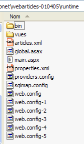
- في [runtime]، يتم استبدال ملف التكوين [web.config] بملف يأخذ في الاعتبار فئة التنفيذ الجديدة:
تعليقات:
- تربط السطور 14 العنصر الفردي [articlesDao] بمثيل لفئة [ArticlesDaoSqlMap] الجديدة. هذا هو التغيير الوحيد.
نحن جاهزون لتشغيل الاختبارات. سنقوم بتكوين خادم الويب [Cassini] كما فعلنا في الاختبارات السابقة. سنقوم بتعبئة جدول articles بالقيم التالية:
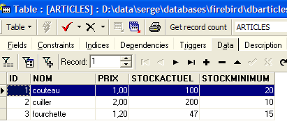
باستخدام متصفح، نطلب عنوان URL [http://localhost/webarticles/main.aspx]:

 |
الآن دعونا نتحقق من محتويات جدول [ARTICLES]:
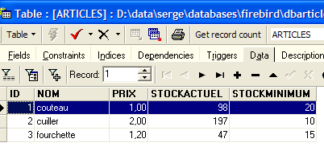
تم شراء العنصرين [knife] و [spoon]، وانخفضت مستويات مخزونهما بمقدار الكمية المشتراة. لم يتم شراء العنصر [fork] لأن الكمية المطلوبة تجاوزت الكمية المتوفرة في المخزون. ندعو القارئ إلى إجراء اختبارات إضافية.
2.5.6.9.2. مصدر بيانات MSDE
نقوم هنا باختبار مصدر بيانات MSDE الذي تمت مناقشته في القسم 2.4.3.1. يتم استخدامه هنا عبر SqlMap. نتبع نفس الإجراء كما في السابق نقوم بإجراء التغييرات التالية على محتويات المجلد [runtime]:
- يظل محتوى مجلد [bin] دون تغيير
- في [runtime]، تتغير ملفات تكوين SqlMap [providers.config، properties.xml]. تظل ملفات التكوين [sqlmap.config، articles.xml] دون تغيير.
- يقوم ملف [providers.config] بتكوين <provider> جديد:
<?xml version="1.0" encoding="utf-8" ?>
<providers>
<clear/>
<provider
name="sqlServer1.1"
assemblyName="System.Data, Version=1.0.5000.0, Culture=neutral, PublicKeyToken=b77a5c561934e089"
connectionClass="System.Data.SqlClient.SqlConnection"
commandClass="System.Data.SqlClient.SqlCommand"
parameterClass="System.Data.SqlClient.SqlParameter"
parameterDbTypeClass="System.Data.SqlDbType"
parameterDbTypeProperty="SqlDbType"
dataAdapterClass="System.Data.SqlClient.SqlDataAdapter"
commandBuilderClass="System.Data.SqlClient.SqlCommandBuilder"
usePositionalParameters = "false"
useParameterPrefixInSql = "true"
useParameterPrefixInParameter = "true"
parameterPrefix="@"
/>
</providers>
يستخدم <provider> هذا فئات .NET للوصول إلى مصادر بيانات SQL Server. وهو مضمن بشكل افتراضي في ملف القالب [providers.config] الموزع مع SqlMap.
- يحدد ملف [properties.xml] <provider> لمصدر MSDE بالإضافة إلى سلسلة الاتصال الخاصة به:
<?xml version="1.0" encoding="utf-8" ?>
<settings>
<add key="provider" value="sqlServer1.1" />
<add
key="connectionString"
value="Data Source=portable1_tahe\msde140405;Initial Catalog=dbarticles;UID=admarticles;PASSWORD=mdparticles;"/>
</settings>
- في [runtime]، يظل ملف التكوين [web.config] دون تغيير.
نحن جاهزون للاختبار. يحتفظ خادم الويب [Cassini] بتكوينه المعتاد. نقوم بتهيئة جدول المقالات في مصدر MSDE باستخدام [EMS MS SQL Manager]:

باستخدام متصفح، نطلب عنوان URL [http://localhost/webarticles/main.aspx]:
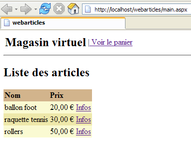
 |
الآن دعونا نتحقق من محتويات جدول [ARTICLES] باستخدام [EMS MS SQL Manager]:

تم شراء العنصرين [كرة قدم] و[مضرب تنس]، وانخفضت مستويات مخزونهما بمقدار الكمية المشتراة. لم يتم شراء العنصر [زلاجات دوارة] لأن الكمية المطلوبة تجاوزت الكمية المتوفرة في المخزون. ندعو القارئ إلى إجراء اختبارات إضافية.
2.5.6.9.3. مصدر بيانات OleDb
نقوم هنا باختبار مصدر بيانات ACCESS المقدم في القسم 2.4.5.1. يتم استخدامه هنا عبر SqlMap. نتبع نفس الإجراء كما في السابق نقوم بإجراء التغييرات التالية على محتويات مجلد [runtime]:
- يظل محتوى مجلد [bin] دون تغيير
- في [runtime]، تتغير ملفات تكوين SqlMap [providers.config، properties.xml]. تظل ملفات التكوين [sqlmap.config، articles.xml] دون تغيير.
- يقوم ملف [providers.config] بتكوين <provider> جديد:
<?xml version="1.0" encoding="utf-8" ?>
<providers>
<clear/>
<provider
name="OleDb1.1"
enabled="true"
assemblyName="System.Data, Version=1.0.5000.0, Culture=neutral, PublicKeyToken=b77a5c561934e089"
connectionClass="System.Data.OleDb.OleDbConnection"
commandClass="System.Data.OleDb.OleDbCommand"
parameterClass="System.Data.OleDb.OleDbParameter"
parameterDbTypeClass="System.Data.OleDb.OleDbType"
parameterDbTypeProperty="OleDbType"
dataAdapterClass="System.Data.OleDb.OleDbDataAdapter"
commandBuilderClass="System.Data.OleDb.OleDbCommandBuilder"
usePositionalParameters = "true"
useParameterPrefixInSql = "false"
useParameterPrefixInParameter = "false"
parameterPrefix = ""
/>
</providers>
يستخدم هذا <provider> فئات .NET للوصول إلى مصادر بيانات OleDb. وهو مضمن بشكل افتراضي في ملف القالب [providers.config] الموزع مع SqlMap.
- يحدد ملف [properties.xml] <provider> مصدر OleDb وسلسلة الاتصال الخاصة به:
<?xml version="1.0" encoding="utf-8" ?>
<settings>
<add key="provider" value="OleDb1.1" />
<add
key="connectionString"
value="Provider=Microsoft.Jet.OLEDB.4.0;Data Source=D:\data\serge\databases\access\articles\articles.mdb;"/>
</settings>
- في [runtime]، يظل ملف التكوين [web.config] دون تغيير.
نحن جاهزون للاختبار. يحتفظ خادم الويب [Cassini] بتكوينه المعتاد. نقوم بتهيئة جدول المقالات من مصدر ACCESS على النحو التالي:

باستخدام متصفح، نطلب عنوان URL [http://localhost/webarticles/main.aspx]:

 |
الآن دعونا نتحقق من محتويات جدول [ARTICLES] باستخدام:

تم شراء العنصرين [pants] و[skirt]، وانخفضت مستويات مخزونهما بمقدار الكمية المشتراة. لم يتم شراء العنصر [coat] لأن الكمية المطلوبة تجاوزت الكمية المتوفرة في المخزون. ندعو القارئ إلى إجراء اختبارات إضافية.
2.5.7. الخلاصة
نختتم هنا هذا المقال التعليمي الطويل. ماذا فعلنا؟
- لقد قمنا بتنفيذ طبقة [DAO] لتطبيق ويب ثلاثي الطبقات بأربع طرق مختلفة:
- باستخدام فئات الوصول .NET لمصادر ODBC
- باستخدام فئات الوصول .NET لمصادر SQL Server
- باستخدام فئات الوصول .NET لمصادر OleDb
- باستخدام فئات الوصول التابعة لجهات خارجية للوصول إلى قاعدة بيانات Firebird
- في كل مرة، قمنا بدمج طبقة [DAO] الجديدة في تطبيق [webarticles] ثلاثي المستويات [web، domain، DAO] دون إعادة ترجمة أي من طبقات [web، domain]
- أخيرًا، أدخلنا أداة [SqlMap]، التي سمحت لنا بإنشاء طبقة [DAO] قادرة على التكيف مع مصادر البيانات المختلفة بشكل شفاف بالنسبة للكود. وبالتالي، باستخدام هذه الطبقة الجديدة، تمكنا من استخدام مصادر البيانات من التطبيقات السابقة 1 إلى 3 بشكل متتالي. تم ذلك بشكل شفاف باستخدام ملفات التكوين.
- أظهرنا المرونة الكبيرة التي توفرها أدوات Spring و SqlMap لتطبيقات الويب ثلاثية الطبقات.